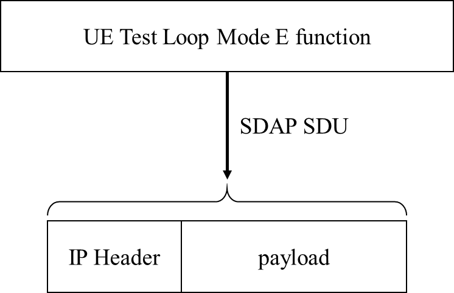

3GPP TS 38.509 V17.5.0 (2024-03)
Technical Specification
3rd Generation Partnership Project;
Technical Specification Group Radio Access Network;
5GS;
Special conformance testing functions for User Equipment (UE)
(Release 17)
The present document has been developed within the 3rd Generation
Partnership Project (3GPP TM) and may be further elaborated
for the purposes of 3GPP..
The present document has not been subject to any approval process by the
3GPP Organizational Partners and shall not be implemented.
This Specification is provided for future development work within 3GPP
only. The Organizational Partners accept no liability for any use of
this Specification.
Specifications and Reports for implementation of the 3GPP TM
system should be obtained via the 3GPP Organizational Partners'
Publications Offices.
Keywords
5GS, UE, terminal, testing
3GPP
Postal address
3GPP support office address
650 Route des Lucioles - Sophia Antipolis
Valbonne - FRANCE
Tel.: +33 4 92 94 42 00 Fax: +33 4 93 65 47 16
Internet
http://www.3gpp.org
Copyright Notification
No part may be reproduced except as authorized by written
permission.
The copyright and the foregoing restriction extend to reproduction in
all media.
© 2024, 3GPP Organizational Partners (ARIB, ATIS, CCSA, ETSI, TSDSI, TTA, TTC).
All rights reserved.
UMTS™ is a Trade Mark of ETSI registered for the benefit of its members
3GPP™ is a Trade Mark of ETSI registered for the benefit of its
Members and of the 3GPP Organizational Partners
LTE™ is a Trade Mark of ETSI registered for the benefit of its Members
and of the 3GPP Organizational Partners
GSM® and the GSM logo are registered and owned by the GSM Association
Foreword 6
1 Scope 7
2 References 7
3 Definitions, symbols and abbreviations 8
3.1 Definitions 8
3.2 Symbols 9
3.3 Abbreviations 9
4 UE special conformance test functions overview 9
4.1 Requirements for UE support of test functions 9
4.2 UE special conformance test functions concept 9
5 UE special conformance test functions operation 10
5.1 General 10
5.2 Activation and deactivation of 5GS test mode bearers (UE test mode procedures) 11
5.2.1 General 11
5.2.2 Activate UE test mode 11
5.2.3 Deactivate UE test mode 11
5.3 Test loop functions 12
5.3.1 General 12
5.3.2 Close UE test loop 12
5.3.2.0 General 12
5.3.2.1 Reception of CLOSE UE TEST LOOP message by the UE 13
5.3.2.2 Reception of AT Command +CCUTLE by the UE 14
5.3.3 Open UE test loop 15
5.3.4 UE functionality when test loop is closed 15
5.3.4.1 UE test loop mode A operation 15
5.3.4.2 UE test loop mode B operation 20
5.3.4.2.1 General 20
5.3.4.2.2 UE test loop mode B operation for EN-DC and NGEN-DC 21
5.3.4.2.3 UE test loop mode B operation for Standalone NR 23
5.3.4.2.4 UE test loop mode B operation for NE-DC 25
5.3.4.2A UE test loop mode C operation 27
5.3.4.2A.1 General 27
5.3.4.2A.2 Reception of MBS packets 30
5.3.4.2A.3 Release of RRC connection 31
5.3.4.3 UE test loop mode E operation 31
5.3.4.3.0 General 31
5.3.4.3.1 Receive or Transmit NR sidelink Communication 35
5.4 UE Beamlock test Function (UBF) 37
5.4.1 General 37
5.4.2 Activate Beamlock procedure 38
5.4.2.1 Initiation 38
5.4.2.2 Reception of ACTIVATE BEAMLOCK message by UE 38
5.4.3 Deactivate Beamlock procedure 39
5.4.3.1 Initiation 39
5.4.3.2 Reception of DEACTIVATE BEAMLOCK message by UE 39
5.4.3.3 Release of antenna beamlock by UE 39
5.5 UE SS-RSRPB per receiver branch reporting 39
5.5.1 General 39
5.5.2 Initiation 40
5.5.3 Reception of SS-RSRPB REPORT REQUEST message by UE 40
5.6 UE Positioning test mode procedures 41
5.6.1 Reset UE Positioning Stored Information 41
5.6.1.1 General 41
5.6.1.2 Initiation 41
5.6.1.3 Reception of RESET UE POSITIONING STORED INFORMATION message by UE 41
5.6.2 Update UE Location Information 42
5.6.2.1 General 42
5.6.2.2 Initiation 43
5.6.2.3 Reception of UPDATE UE LOCATION INFORMATION message by UE 43
5.6.3 UTC time reset 43
5.7 NSSAI delete test function 43
5.7.1 General 43
5.8 Set UAI test function 44
5.8.1 General 44
5.8.2 Initiation 45
5.9 NR Sidelink Packet Counter reporting procedure 45
5.9.1 Request NR Sidelink Packet Counter value 45
5.9.1.1 General 46
5.9.1.2 Initiation 46
5.9.1.3 Reception of UE TEST LOOP NR SIDELINK COUNTER REQUEST by the UE 46
5.9.1.4 Reception of AT Command +CUSPCREQ by the UE 46
5.10 Set UL Message test function 47
5.10.1 General 47
5.11 UE Power Limit Function (UPLF) 47
5.11.1 General 47
5.11.2 Activate Power Limit Procedure 48
5.11.2.1 Initiation 48
5.11.2.2 Reception of ACTIVATE POWER LIMIT REQUEST by UE 48
5.11.3 Deactivate Power Limit Procedure 49
5.11.3.1 Initiation 49
5.11.3.2 Reception of DEACTIVATE POWER LIMIT REQUEST message by UE 49
5.11.3.3 Removal of power limits by UE 49
5.12 MBMS Packet Counter reporting procedure 49
5.12.1 Request MBMS Packet Counter value 49
5.13 Set MUSIM UAI test function 49
5.13.1 General 49
5.13.2 Initiation 50
6 Test Mode Control message definitions 50
6.1 General 50
6.2 Test mode messages 51
6.2.1 ACTIVATE TEST MODE 51
6.2.2 ACTIVATE TEST MODE COMPLETE 51
6.2.3 DEACTIVATE TEST MODE 51
6.2.4 DEACTIVATE TEST MODE COMPLETE 51
6.3 Test loop messages 51
6.3.1 CLOSE UE TEST LOOP 51
6.3.2 CLOSE UE TEST LOOP COMPLETE 52
6.3.3 OPEN UE TEST LOOP 52
6.3.4 OPEN UE TEST LOOP COMPLETE 52
6.3.5 Void 53
6.3.6 Void 53
6.4 Beamlock messages 53
6.4.1 ACTIVATE BEAMLOCK 53
6.4.2 ACTIVATE BEAMLOCK COMPLETE 53
6.4.3 DEACTIVATE BEAMLOCK 54
6.4.4 DEACTIVATE BEAMLOCK COMPLETE 54
6.5 UE SS-RSRP per receiver branch reporting messages 54
6.5.1 SS-RSRPB REPORT REQUEST 54
6.5.2 SS-RSRPB REPORT RESPONSE 55
6.6 UE Positioning messages 55
6.6.1 RESET UE POSITIONING STORED INFORMATION 55
6.6.2 UPDATE UE LOCATION INFORMATION 56
6.7 NSSAI delete messages 56
6.7.1 NSSAI DELETE REQUEST 56
6.7.2 NSSAI DELETE RESPONSE 58
6.8 SET UAI REQUEST 58
6.8.1 SET UAI REQUEST 58
6.8.2 SET UAI RESPONSE 59
6.9 NR SIDELINK PACKET COUNTER reporting messages 59
6.9.1 UE TEST LOOP NR SIDELINK PACKET COUNTER REQUEST 59
6.9.2 UE TEST LOOP NR SIDELINK PACKET COUNTER RESPONSE 59
6.10 SET UL MESSAGE 61
6.10.1 SET UL MESSAGE REQUEST 61
6.10.2 SET UL MESSAGE RESPONSE 61
6.11 Power Limit messages 61
6.11.1 ACTIVATE POWER LIMIT REQUEST 61
6.11.2 ACTIVATE POWER LIMIT RESPONSE 62
6.11.3 DEACTIVATE POWER LIMIT REQUEST 63
6.11.4 DEACTIVATE POWER LIMIT RESPONSE 63
6.12 UE TEST LOOP MODE C MBMS PACKET COUNTER reporting messages 63
6.12.1 UE TEST LOOP MODE C MBMS PACKET COUNTER REQUEST 63
6.12.2 UE TEST LOOP MODE C MBMS PACKET COUNTER RESPONSE 63
6.13 SET MUSIM UAI REQUEST 64
6.13.1 SET MUSIM UAI REQUEST 64
6.13.2 SET MUSIM UAI RESPONSE 66
7 Variables, constants and timers 66
7.1 State variables 66
7.2 Constants 66
7.3 Timers 66
7.4 Configurable parameters 66
8 Electrical Man Machine Interface (EMMI) 67
Annex A (normative): Pre-defined message containers used for testing 68
Annex B (informative): Change history 72
This Technical Specification has been produced by the 3rd Generation Partnership Project (3GPP).
The contents of the present document are subject to continuing work within the TSG and may change following formal TSG approval. Should the TSG modify the contents of the present document, it will be re-released by the TSG with an identifying change of release date and an increase in version number as follows:
Version x.y.z
where:
x the first digit:
1 presented to TSG for information;
2 presented to TSG for approval;
3 or greater indicates TSG approved document under change control.
y the second digit is incremented for all changes of substance, i.e. technical enhancements, corrections, updates, etc.
z the third digit is incremented when editorial only changes have been incorporated in the document.
The present document defines for User Equipment (UE) those special functions and their activation/deactivation methods that are required in the UE for conformance testing purposes when the UE is connected to the 5G System (5GS) via its radio interface(s).
The document also describes the operation of these special functions when the 5GS capable UEs are connected via a non-5GS system e.g. E-UTRA FDD or TDD system.
Depending on the 5GS system's architecture some relevant for the UE for conformance testing special functions may be defined in TS 36.509 [6].
The following documents contain provisions which, through reference in this text, constitute provisions of the present document.
References are either specific (identified by date of publication, edition number, version number, etc.) or non‑specific.
- For a specific reference, subsequent revisions do not apply.
- For a non-specific reference, the latest version applies. In the case of a reference to a 3GPP document (including a GSM document), a non-specific reference implicitly refers to the latest version of that document in the same Release as the present document unless the context in which the reference is made suggests a different Release is relevant (information on the applicable release in a particular context can be found in e.g. test case title, description or applicability, message description or content).
[1] 3GPP TR 21.905: "Vocabulary for 3GPP Specifications".
[2] 3GPP TS 38.508-1: "5GS; User Equipment (UE) conformance specification; Part 1: Common test environment ".
[3] 3GPP TS 38.523-1: "5GS; User Equipment (UE) conformance specification; Part 1: Protocol ".
[4] 3GPP TS 38.523-3: "5GS; User Equipment (UE) conformance specification; Part 3: Protocol Test Suites "
[5] 3GPP TS 38.522: "NR; User Equipment (UE) conformance specification; Applicability of RF and RRM test cases".
[6] 3GPP TS 36.509: "Evolved Universal Terrestrial Radio Access (E-UTRA) and Evolved Packet Core (EPC); Special conformance testing functions for User Equipment (UE)".
[7] 3GPP TS 24.007: "Mobile radio interface signalling layer 3; General Aspects".
[8] 3GPP TS 34.109: "Terminal logical test interface; Special conformance testing functions".
[9] 3GPP TS 44.014: "Individual equipment type requirements and interworking; Special conformance testing functions".
[10] 3GPP TS 36.331: "Evolved Universal Terrestrial Radio Access (EUTRA) Radio Resource Control (RRC) Protocol Specification".
[11] 3GPP TS 38.331: "NR Radio Resource Control (RRC) protocol specification".
[12] 3GPP TS 38.521-1: "NR; User Equipment (UE) conformance specification; Radio transmission and reception; Part 1: Range 1 Standalone".
[13] 3GPP TS 38.521-2: "NR; User Equipment (UE) conformance specification; Radio transmission and reception; Part 2: Range 2 Standalone".
[14] 3GPP TS 38.521-3: "NR; User Equipment (UE) conformance specification; Radio transmission and reception; Part 3: Range 1 and Range 2 Interworking operation with other radios".
[15] 3GPP TS 38.521-4: "NR; User Equipment conformance specification; Radio transmission and reception; Part 4: Performance".
[16] 3GPP TS 38.533: NR; "User Equipment (UE) conformance specification; Radio resource management".
[17] 3GPP TS 24.301: "Non-Access-Stratum (NAS) protocol for Evolved Packet System (EPS); Stage 3".
[18] 3GPP TS 36.323: "Evolved Universal Terrestrial Radio Access (E-UTRA); Packet Data Convergence Protocol (PDCP) specification".
[19] 3GPP TS 38.323: "NR; Packet Data Convergence Protocol (PDCP) specification".
[20] 3GPP TS 38.306: "NR; User Equipment (UE) radio access capabilities".
[21] 3GPP TS 24.501: "Non-Access-Stratum (NAS) protocol for 5G System (5GS); Stage 3".
[22] 3GPP TS 38.215: "NR; Physical Layer Measurements".
[23] 3GPP TS 38.321: "NR; Medium Access Control (MAC) protocol specification".
[24] 3GPP TS 37.355: "LTE Positioning Protocol (LPP)".
[25] 3GPP TS 38.211: "NR; Physical channels and modulation".
[26] 3GPP TS 24.587: " Vehicle-to-Everything (V2X) services in 5G System (5GS), Stage 3".
For the purposes of the present document, the terms and definitions given in 3GPP TR 21.905 [1] and the following apply. A term defined in the present document takes precedence over the definition of the same term, if any, in 3GPP TR 21.905 [1].
Frequency Range 2 (FR2): The frequency ranges in which NR can operate being in the range of 24250 MHz - 52600 MHz.
Logical Test Interface: interface which provides the logical service to interwork and to communicate between UE and System Simulator during the test of a UE
SS (System Simulator): test system (or equipment) that drives the test process with UE, like 5G System simulator
TMC (Test Mode Control): UE protocol entity used by the SS to control the UE specific testing functions
NOTE: In other Special conformance testing functions for User Equipment (UE) 3GPP specifications e.g. 36.509 [6], the term Test Control (TC) is used for describing the same UE entity. The different names do not preclude the implementation of a single entity to handle all the functionality in a UE supporting different 3GPP technologies.
UE (User Equipment): user equipment as defined in [1] that is under test
No specific symbols apply for the purposes of the present document.
For the purposes of the present document, the abbreviations given in 3GPP TR 21.905 [1] and the following apply. An abbreviation defined in the present document takes precedence over the definition of the same abbreviation, if any, in 3GPP TR 21.905 [1].
EMMI Electrical Man Machine Interface
FFS For further Study
FR2 Frequency Range 2
LB Loop Back
MTC Main Test Component
NSSAI Network Slice Selection Assistance Information
SS System Simulator
TMC Test Mode Control
The UE special conformance test functions are required for the support of 5GS conformance testing. They form a part of the core requirements and thus have a direct impact on the design of the UE. The use of the word "mandatory" in the present specification shall be understood as a particular requirement being mandatory for performing UE conformance testing.
NOTE: While the importance of conformance testing should not be underestimated, and hence is highly recommended, the implementation of facilitation of it is left to the Device implementation.
The present specification defines the UE special conformance test functions including any relevant procedure and the Test Mode Control (TMC) message contents used for information exchange.
The conformance test methods applied in RF/RRM Conformance Test Specification TS 38.521-1 [12], TS 38.521-2 [13], TS 38.521-3 [14], TS 38.521-4 [15] and TS 38.533 [16], and, the conformance test models used in Protocol Conformance Test Specifications TS 38.523-1 [3] and TS 38.523-3 [4], as well as, common test environment definition and Generic procedures specified in TS 38.508-1 [2] utilise the UE special conformance test functions. Default TMC messages and information element contents utilised in all before mentioned test specifications are specified in TS 38.508-1 [2].
The UE special conformance test functions vary depending on the conformance testing functionality they are designed to support. The following broader groups of UE special conformance test functions can be identified:
- Test Loop Functions: Functions which require a loop to be established between the UE and the System Simulator (SS) to allow e.g. DL data packets sent by the SS to be looped back UL by the UE
- General Test Functions: Commands send by the SS e.g. to trigger a certain UE behaviour which may be a behaviour determined by 3GPP core spec requirements or such needed to facilitate conformance testing and not being part of any 3GPP core spec requirements, or, to provide to the UE information needed for the conformance testing.
NOTE 1: An example for behaviour needed to facilitate conformance testing and not representing behaviour determined by 3GPP core spec requirements is counting and reporting the number of received data packets thereby providing means to the SS to verify 3GPP core spec requirements.
The utilisation of any UE special conformance test functions shall be considered as putting the UE in a test mode. The duration of the test mode depends on the UE special conformance test function and in most of the cases will be delimited by an activation and a deactivation command. However, in the case of general test functions used e.g. only to provide information relevant for the conformance testing the test mode can be considered as entered as soon as the information is received and exited as soon as the information has been acted upon.
As a common rule the UE special conformance test functions provide access to isolated functions of the UE via the radio interface without introducing new physical interfaces just for the reason of conformance testing. However, in certain cases the usage of AT Commands may be required which will require an external interface e.g. EMMI.
NOTE 2: It should be emphasised that the UE test functions only describe the functional behaviour of the UE with respect to its external interfaces; physical implementation of the UE test function is completely left open to the manufacturer.
Depending on the conformance testing functionality they are designed to support, the UE special conformance test functions may comprise:
- A single DL message (e.g. a test function intended to provide to the UE information needed for the conformance testing)
- A Request/Acknowledgement type of 2 messages exchange, an DL message followed by a UL message, (e.g. a test function intended to request the UE to execute an action which requires acknowledgment that request was received and acted upon)
Furthermore, depending on the conformance test scenarios
- An UE special conformance test function can be used in isolation.
NOTE 3: An example for this is the provision to the UE of location information which can then be used by the UE throughout its "normal" i.e. not test mode functions dependant behaviour.
- Two, or more, UE special conformance test functions may need to be executed in a particular sequence before the target UE behaviour can be assumed.
NOTE 4: An example for this are the Activate UE test mode and Close UE test loop functions. The former needs to be executed first, at a particular moment of time, in order a specific type of test bearer terminated in a particular UE protocol layer to be established. Followed by the latter, executed at different point of time, which will instruct the UE to start looping back the received packets.
- Two, or more, UE special conformance test functions may be executed simultaneously with no particular relation one to another allowing for different test mode functionality to take place at the same time.
NOTE 5: An example for this are the UE Beamlock test function and the test functions needed for test loop mode operation (see NOTE 4). The former may need to be active throughout the entire tests with the latter being active in parts of the test as appropriate. Both being active independently.
For the specification of UE special conformance test functions the present specification may refer to other specifications. In the case when text on the same matter exists in the present specification and in the referred specification, the text in the present specification takes precedence.
For consistency with legacy terminology, the present specification uses the terms 'Activate UE test mode' and 'Deactivate UE test mode' for denoting the activation and the deactivation of 5GS test mode bearers procedures respectively. Consequently, 'Activate UE test mode' should not be understood as setting the UE in test mode in general rather, as setting the UE in a mode (i.e. establishing a special type of test bearers) which other special UE conformance testing functions require for proper operation. As this has been mentioned elsewhere in the present specification, not all special UE conformance testing functions require such a setting.
Similarly, the present specification may use the term 'UE test loop mode X operation", where X is a chose letter, for denoting operation which does not represent true looping back of data being received rather, it represents what can be called as a "pseudo loop" i.e. providing back information about the received data e.g. the number of the received packets.
The SS performs, where applicable, activation and deactivation of the conformance test functions in the UE by sending Security Protected NAS Layer 3 messages.
The UE test mode procedures are intended for setting the UE into a test mode where the SS can set up test bearers terminated at a particular point in the 5GS protocol stack as specified in the functional block diagram of each UE test loop mode of operation. The following test bearers are defined in the present specification:
- data radio bearers (UE test loop mode A),
- EPS bearers or 5GS QoS flows (UE test loop mode B).
- MBS radio bearers (UE test loop mode C).
- NR PC5 QoS flows (UE test loop mode E).
Same as TS 36.509 [6], subclause 5.3.2 with the following exceptions:
- where E-UTRA is mentioned the same applies for NR;
- where V2X is mentioned the same applies for NR sidelink;
- MTCH data radio bearer is replaced by MBS radio bearer;
the NB-IoT mode is out of the scope of the present specification;
where different UE test loop modes are mentioned only those applicable to 5GS should be taken into account (see subclause 5.3.4 for the applicable 5GS UE test loop modes).
Same as TS 36.509 [6], subclause 5.3.3 with the following exceptions
- where E-UTRA is mentioned the same applies for NR;
- where V2X is mentioned the same applies for NR sidelink;
- the NB-IoT mode is out of the scope of the present specification;
- where different UE test loop modes are mentioned only those applicable to 5GS should be taken into account (see subclause 5.3.4 for the applicable 5GS UE test loop modes).
Apart from sending the appropriate deactivation command to the UE the functions shall be deactivated by:
switching off the UE; or
by removing the USIM.
Before a loop functionality can be exercised, the test loop needs to be closed; this is to be understood as the UE being instructed to start looping back received data packets. When looping back received data packets is not any longer required the loop should be re-opened; opening of a loop does not change the type of bearer being established by the UE test mode activation function (subclause 5.2.2).
To limit the number of special test functions, the concept of closing and opening a loop is also used as instruction to the UE to initiate/terminate other actions. An example of this is counting the received packets and reporting the number of received packets back to the SS; in the context of this utilisation closing a loop is to be understood as the UE being instructed to start counting the packets, whereas opening a loop should be understood as stop counting the packets. Other utilisation of the closing/opening a "test loop" test functionality can be specified if appropriate.
The UE test loop functions for 5GS are intended for:
- NR receiver and transmitter testing to disable application data transfer in downlink and uplink during SS UE measurements.
- NR layer 2 (MAC, RLC, PDCP, SDAP) and data radio bearer testing to generate data transfer in downlink and uplink.
- NR layer 2 (MAC, RLC, PDCP, SDAP) and sidelink data radio bearer testing to generate data transfer in sidelink.
- NR layer 2 (MAC, RLC, PDCP) and MBS radio bearer testing.
- 5GC and NR layer 3 testing to verify data transfer continuation over RRC and 5GC procedures.
- 5GC and NR layer 3 testing to verify data transfer over PC5 interface.
- 5GC NAS user-plane testing to verify uplink QoS flow descriptions handling.
- PC5-U testing to verify sidelink PC5 QoS flow descriptions handling.
Same as TS 36.509 [6], subclause 5.4.2 with the following exceptions:
- where E-UTRA is mentioned the same applies for NR;
- where V2X is mentioned the same applies for NR sidelink;
- the NB-IoT mode is out of the scope of the present specification
- where different UE test loop modes are mentioned only those applicable to 5GS should be taken into account (see subclause 5.3.4 for the applicable 5GS UE test loop modes).
- where EPS bearers are mentioned the same applies for 5GS QoS flows;
- where MTCH data radio bearer is replaced by MBS radio bearer;
- UE supported minimum buffer size for MR-DC and NR shall match the required total layer 2 buffer size as specified in TS 38.306 [20], clause 4.1.4.
- Subclause 5.4.2.3 in TS 36.509 [6] is replaced by 5.3.2.1 in current specification; and
- Subclause 5.4.2.4in TS 36.509 [6] is replaced by 5.3.2.2 in current specification.
Same as TS 36.509 [6], subclause 5.4.2.3 with the following exceptions:
…
1> else if UE test loop mode C has been selected;
2> if no MBS radio bearer is established or if the UE test mode is not active; or
2> if UE test loop mode A or UE test loop mode B operation is already closed on one or more data radio bearers; or
2> if TEST_LOOP_MODE_C_ACTIVE = TRUE or TEST_LOOP_MODE_D_ACTIVE = TRUE or TEST_LOOP_MODE_E_ACTIVE = TRUE or TEST_LOOP_MODE_F_ACTIVE = TRUE or TEST_LOOP_MODE_G_ACTIVE = TRUE or TEST_LOOP_MODE_H_ACTIVE = TRUE or TEST_LOOP_MODE_I_ACTIVE = TRUE:
3> the UE behaviour is unspecified.
2> otherwise:
3> set TEST_LOOP_MODE_C_ACTIVE to TRUE
3> set state variable MBMS_PACKET_COUNTER to zero;
3> perform the UE actions for UE Test Loop Mode C operation as specified in subclause 5.3.4.2A and
3> send CLOSE UE TEST LOOP COMPLETE message (the loopback shall be operational prior to the sending of the acknowledgement).
1> else if UE test loop mode E has been selected;
2> if UE test loop mode A or UE test loop mode B operation is already closed on one or more data radio bearers; or
2> if TEST_LOOP_MODE_C_ACTIVE = TRUE or TEST_LOOP_MODE_D_ACTIVE = TRUE or TEST_LOOP_MODE_E_ACTIVE = TRUE or TEST_LOOP_MODE_F_ACTIVE = TRUE or TEST_LOOP_MODE_G_ACTIVE = TRUE or TEST_LOOP_MODE_H_ACTIVE = TRUE or TEST_LOOP_MODE_I_ACTIVE = TRUE; or
2> if the UE is unable to read the pre-configured parameters for NR sidelink Communication from the USIM; or
2> when test loop mode E is utilised in NR sidelink out-of-coverage scenarios:
3> the UE behaviour is unspecified.
2> otherwise:
3> set TEST_LOOP_MODE_E_ACTIVE to TRUE
3> if the E0 bit in Communication Transmit or Receive parameter in UE test loop mode E setup IE is set as zero;
4> set TEST_LOOP_MODE_E_TRIGGER to RECEIVE
4> set state variable PROSE_COMMUNICATION_MONITOR_N to the number of entities in the list of Group Destination IDs to individually monitor included in the UE test loop mode E setup IE;
4> if PROSE_COMMUNICATION_MONITOR_N is greater than MAX_ModeE_Monitor_Entities:
5> the UE behaviour is unspecified.
4> for SL_ID = 0…(PROSE_COMMUNICATION_MONITOR_N-1):
5> set state variable PROSE_COMMUNICATION_DEST_ID(SL_ID) to the parameter Group Destination ID #(SL_ID) to monitor of the UE test loop mode E setup IE;
5> set state variable STCH_PACKET_COUNTER(SL_ID) to zero;
5> set state variable PSCCH_PACKET_COUNTER(SL_ID) to zero;
5> set state variable PSSCH_PACKET_COUNTER(SL_ID) to zero;
4> set state variable STCH_PACKET_COUNTER(PROSE_COMMUNICATION_MONITOR_N) to zero;
4> set state variable PSCCH_PACKET_COUNTER(PROSE_COMMUNICATION_MONITOR_N) to zero;
4> set state variable PSSCH_PACKET_COUNTER(PROSE_COMMUNICATION_MONITOR_N) to zero;
4> perform the UE actions for UE Test Loop Mode E operation as specified in subclause 5.3.4.3.1;
3> if the E0 bit in Communication Transmit or Receive parameter in UE test loop mode E setup IE is set as one;
4> if the E1 bit in Communication Transmit or Receive parameter in UE test loop mode E setup IE is set as zero;
5> set TEST_LOOP_MODE_E_TRIGGER to TRANSMIT;
4> else
5> set TEST_LOOP_MODE_E_TRIGGER to TRANSMIT_SL_MIMO;
4> perform the UE actions for UE Test Loop Mode E operation as specified in subclause 5.3.4.3.1;
3> send CLOSE UE TEST LOOP COMPLETE message (the loopback shall be operational prior to the sending of the acknowledgement).
Upon receiving the AT Command +CCUTLE=<status=0>[,<direction>[,<format>,<length>,<monitor_list>,<sl_mimo>]] the UE shall:
1> if UE test loop mode E has been selected;
2> if TEST_LOOP_MODE_E_ACTIVE = TRUE; or
2> if the UE is unable to read the pre-configured parameters for NR sidelink Communication from the USIM:
3> the UE behaviour is unspecified.
2> otherwise:
3> set TEST_LOOP_MODE_E_ACTIVE to TRUE
3> if the <direction> parameter in +CCUTLE set command is set as zero;
4> set TEST_LOOP_MODE_E_TRIGGER to RECEIVE
4> if the <format> parameter in +CCUTLE set command is set as 1
5> set state variable PROSE_COMMUNICATION_MONITOR_N to the number of entities in the list of Destination Layer-2 IDs to individually monitor included in the <monitor_list> parameter of +CCUTLE set command;
5> if PROSE_COMMUNICATION_MONITOR_N is greater than MAX_ModeE_Monitor_Entities:
6> the UE behaviour is unspecified.
5> for SL_ID = 0…(PROSE_COMMUNICATION_MONITOR_N-1):
6> set state variable PROSE_COMMUNICATION_DEST_ID(SL_ID) to the parameter Destination Layer-2 ID #(SL_ID) to monitor in the +CCUTLE set command;
6> set state variable STCH_PACKET_COUNTER(SL_ID) to zero;
6> set state variable PSCCH_PACKET_COUNTER(SL_ID) to zero;
6> set state variable PSSCH_PACKET_COUNTER(SL_ID) to zero;
5> set state variable STCH_PACKET_COUNTER(PROSE_COMMUNICATION_MONITOR_N) to zero;
5> set state variable PSCCH_PACKET_COUNTER(PROSE_COMMUNICATION_MONITOR_N) to zero;
5> set state variable PSSCH_PACKET_COUNTER(PROSE_COMMUNICATION_MONITOR_N) to zero;
5> perform the UE actions for UE Test Loop Mode E operation as specified in subclause 5.3.4.3.1;
4> else
5> the UE behaviour is unspecified.
3> if the <direction> parameter in +CCUTLE set command is set as one;
4> if the <sl_mimo> parameter in UE test loop mode E setup IE is set as zero
5> set TEST_LOOP_MODE_E_TRIGGER to TRANSMIT
4> else
5> set TEST_LOOP_MODE_E_TRIGGER to TRANSMIT_SL_MIMO;
4> perform the UE actions for UE Test Loop Mode E operation as specified in subclause 5.3.4.3.1;
1> else;
2> the UE behaviour is unspecified.
Same as TS 36.509 [6], subclause 5.4.5 with the exceptions:
- where E-UTRA is mentioned the same applies for NR;
- where V2X is mentioned the same applies for NR sidelink;
- the NB-IoT mode is out of the scope of the present specification;
- where different UE test loop modes are mentioned only those applicable to 5GS should be taken into account (see subclause 5.3.4 for the applicable 5GS UE test loop modes).
UE test loop mode A provides loopback of PDCP SDUs for bi-directional data radio bearers while UE is operating in NR. The downlink PDCP SDUs received by the UE on each bi-directional data radio bearer are returned on the same radio bearer regardless of the PDCP SDU contents and of the QoS flow descriptions of the associated QoS Flow as specified in TS 24.501 [21].
Figures 5.3.4.1-1 and 5.3.4.1-2 show functional block diagrams of UE test loop function for the TMC entity and UE test loop mode A for the case when EN-DC or NGEN-DC with a MCG bearer and a SCG bearer is configured and for the case EN-DC or NGEN-DC with a MCG and a split bearer is configured.
Figures 5.3.4.1-3 shows functional block diagrams of UE test loop function for the TMC entity and UE test loop mode A for the case when standalone NR is configured Header compression / decompression block in NR PDCP covers ROCH and EHC protocols as described in TS 38.323 [19] clause 4.2.2.
Figures 5.3.4.1-4 and 5.3.4.1-5 show functional block diagrams of UE test loop function for the TMC entity and UE test loop mode A for the case when NE-DC with a MCG bearer and a SCG bearer is configured and for the case NE-DC with a MCG and a split bearer is configured.
NOTE 1: The number and the order of RB LB Entities in the functional block diagrams are provided for illustration only. No specific order or numbering is precluded.
Figure 5.3.4.1-1: Model for Test Mode Control and UE Test Loop Mode A on UE side when EN-DC or NGEN-DC with MCG bearer and SCG bearer is configured
Figure 5.3.4.1-2: Model for Test Mode Control and UE Test Loop Mode A on UE side when EN-DC or NGEN-DC with MCG and split bearer configured
Figure 5.3.4.1-3: Model for Test Mode Control and UE Test Loop Mode A on UE side when standalone NR is configured
Figure 5.3.4.1-4: Model for Test Mode Control and UE Test Loop Mode A on UE side when NE-DC with MCG and SCG bearers configured
Figure 5.3.4.1-5: Model for Test Mode Control and UE Test Loop Mode A on UE side when NE-DC with MCG and split bearers configured
UE test loop mode A is mandatory to all 5GS UEs.
Prior to closing the UE test loop mode A, thereby requesting the UE to start looping back the received data packets, at least one 5GS test mode bi-directional data radio bearer shall have been established between SS and UE. This implies that before the procedure for establishing the bi-directional data radio bearer takes place the SS needs to activate the UE test mode as specified in subclause 5.2.2.
The 5GS UE test loop mode A operation is the same as the one described in TS 36.509 [6], subclause 5.4.3 with the exception where E-UTRA is mentioned the same applies for NR, and, the understanding that the NB-IoT mode is out of the scope of the present specification.
UE test loop mode B is mandatory to all 5GS UEs supporting one or more PDU session establishments.
UE test loop mode B provides loopback of PDCP SDUs for bi-directional EPS bearers while UE is operated in NR or E-UTRA modes. When operating in NR or E-UTRA, the downlink PDCP SDUs or SNDCP PDUs received by the UE on all bi-directional data radio bearers are returned by the UE on the data radio bearer associated with an QoS Flow with a QoS flow descriptions matching the TCP/UDP/IP protocol information within the PDCP SDU or SNDCP SDU as specified in TS 24.501 [21].
NOTE 1: When multiple PDN connections are established (or multiple Primary PDP Contexts are active), it is assumed that different IP addresses are allocated to the UE by the SS on each PDN.
Figures 5.3.4.2.2-1 and 5.3.4.2.2-2 show functional block diagrams of UE test loop function for the TMC entity and UE test loop mode B for the case when EN-DC or NGEN-DC with a MCG bearer and a SCG bearer is configured and for the case EN-DC or NGEN-DC with a MCG and a split bearer is configured.
NOTE 2: The number and the order of RB LB Entities in the UE Test Loop Function in the functional block diagrams are provided for illustration only. No specific order or numbering is precluded.
Figure 5.3.4.2.2-1: Model for Test Mode Control and UE Test Loop Mode B on UE side when EN-DC or NGEN-DC with MCG bearer and SCG bearer is configured
Figure 5.3.4.2.2-2: Model for Test Mode Control and UE Test Loop Mode B on UE side when EN-DC or NGEN-DC with MCG and split bearer configured
UE test loop mode B provides loopback of SDAP SDUs for bi-directional QoS Flows while UE is operated in standalone NR mode. Prior to closing the UE test loop mode B, thereby requesting the UE to start looping back the received data packets, at least one 5GS test mode bi-directional QoS Flow shall have been established between SS and UE. This implies that before the procedure for establishing the bi-directional QoS Flows takes place the SS needs to activate the UE test mode as specified in subclause 5.2.2
The downlink SDAP SDUs or IP PDU's received by the UE on all bi-directional QoS Flows are returned by the UE without any modification of the IP header to the UL QoS flow descriptions handling SAP for transmission in uplink.
NOTE 1: When multiple PDU sessions are established, it is assumed that different IP addresses are allocated to the UE by the SS on each PDU session.
Figure 5.3.4.2.3-1 shows functional block diagrams of UE test loop function for the TMC entity and UE test loop mode B for the case when standalone NR is configured.
NOTE 2: The number and the order of QoS Flow LB Entities in the UE Test Loop Function in the functional block diagrams are provided for illustration only. No specific order or numbering is precluded.
The 5GS UE test loop mode B operation is the same as the one described in TS 36.509 [6], subclause 5.4.4 with the exception where E-UTRA is mentioned the same applies for NR, and, where PDCP SDU is mentioned the same applies for SDAP SDU.
Figure 5.3.4.2.3-1: Model for Test Mode Control and UE Test Loop Mode B on UE side when standalone NR is configured
UE test loop mode B provides loopback of SDAP SDUs for bi-directional QoS Flows while UE is operated in NR or E-UTRA modes. Prior to closing the UE test loop mode B, thereby requesting the UE to start looping back the received data packets, at least one 5GS test mode bi-directional QoS Flow shall have been established between SS and UE. This implies that before the procedure for establishing the bi-directional QoS Flows takes place the SS needs to activate the UE test mode as specified in subclause 5.2.2
The downlink SDAP SDUs or IP PDU's received by the UE on all bi-directional QoS Flows are returned by the UE without any modification of the IP header to the UL QoS flow descriptions handling SAP for transmission in uplink.
NOTE 1: When multiple PDU sessions are established, it is assumed that different IP addresses are allocated to the UE by the SS on each PDU session.
Figure 5.3.4.2.4-1 and 5.3.4.2.4-2 show functional block diagrams of UE test loop function for the TMC entity and UE test loop mode B for the case when NE-DC with a MCG and a SCG bearer is configured and for the case NE-DC with a MCG and a split bearer is configured.
NOTE 2: The number and the order of QoS Flow LB Entities in the UE Test Loop Function in the functional block diagrams are provided for illustration only. No specific order or numbering is precluded.
Figure 5.3.4.2.4-1: Model for Test Mode Control and UE Test Loop Mode B on UE side when NE-DC with MCG bearer and SCG bearers configured
Figure 5.3.4.2.4-2: Model for Test Mode Control and UE Test Loop Mode B on UE side when NE-DC with MCG bearer and split bearers configured
UE test loop mode C is mandatory for NR UEs supporting MBS.
UE test loop mode C provides counting of successfully received MBS Packets on one MRB (Multicast MRB or Broadcast MRB) while UE is operating in NR/5GC.
- For Multicast MRB configuration:
- Multicast MRB with DL only RLC-UM or bidirectional RLC-UM configuration for PTP transmission;
- Multicast MRB with RLC-AM entity configuration for PTP transmission;
- Multicast MRB with DL only RLC-UM entity for PTM transmission;
- Multicast MRB with two RLC-UM entities, one DL only RLC-UM entity for PTP transmission and the other DL only RLC-UM entity for PTM transmission;
- Multicast MRB with three RLC-UM entities, one DL RLC-UM entity and one UL RLC-UM entity for PTP transmission and the other DL only RLC-UM entity for PTM transmission;
- Multicast MRB with two RLC entities, one RLC-AM entity for PTP transmission and the other DL only RLC-UM entity for PTM transmission.
- For Broadcast MRB configuration:
- Broadcast MRB with one DL only RLC-UM entity for PTM transmission.
Figure 5.3.4.2A.1-1 shows a functional block diagram of UE test loop function for TC entity and UE test loop mode C for Multicast MRB. The MBMS Packet Counter function is configured to count successfully received MBS packets on one Multicast MRB configured by the SS when UE test loop mode C is activated.
Figure 5.3.4.2A.1-2 shows a functional block diagram of UE test loop function for TC entity and UE test loop mode C for Broadcast MRB. The MBMS Packet Counter function is configured to count successfully received MBS packets on one Broadcast MRB configured by the SS when UE test loop mode C is activated.
Figure 5.3.4.2A.1-1: Model for UE test loop mode C on UE side for Multicast MRB
Figure 5.3.4.2A.1-2: Model for UE test loop mode C on UE side for Broadcast MRB
For Broadcast MRB, upon receiving a MBS packet on the Broadcast MRB with Identity of the logical channel of broadcast MTCH configured in CLOSE UE TEST LOOP when operating in RRC_IDLE or RRC_CONNECTED or RRC_INACTIVE mode with UE test loop mode C active the UE shall:
1> if UE test loop mode C is active;
2> increment MBMS_PACKET_COUNTER by 1:
1> else:
2> the UE behaviour is unspecified.
For Multicast MRB, upon receiving a MBS packet on the Multicast MRB with MRB Identity configured in CLOSE UE TEST LOOP when operating in RRC_CONNECTED mode with UE test loop mode C active the UE shall:
1> if UE test loop mode C is active;
2> increment MBMS_PACKET_COUNTER by 1:
1> else:
2> the UE behaviour is unspecified.
When the RRC connection is released then the UE shall:
1> if UE test loop mode C is active for Broadcast MRB:
2> keep UE test loop mode C active.
1> else
2> the UE behaviour is unspecified.
UE test loop mode E is mandatory to all 5GS UEs supporting NR sidelink.
UE test loop mode E provides means for either transmit or receive of SDAP SDUs for PC5 QoS Flows while UE is operating in NR sidelink, as specified by the test loop mode E setup IE in the CLOSE UE TEST LOOP message.
For communication receive operation, UE test loop mode E provides counting of successfully received STCH PDCP SDUs, PSCCH PHY transport blocks and PSSCH PHY transport blocks while the UE is operating in NR sidelink communication mode.
For communication transmit operation, UE test loop mode E provides trigger for transmission of NR sidelink communication packets. For the V2X out-of-coverage scenarios this trigger utilises AT commands and requires an appropriate physical interface.
Figure 5.3.4.3.0-1 shows functional block diagrams of UE test loop function for the TMC entity and UE test loop mode E for the intra-frequency or inter-frequency concurrent operation case when Communication receive is indicated in UE test loop mode E setup IE.
Figure 5.3.4.3.0-2 shows functional block diagrams of UE test loop function for the TMC entity and UE test loop mode E for the PC5-only operation case when Communication receive is indicated in UE test loop mode E setup IE.
Figure 5.3.4.3.0-3 shows functional block diagrams of UE test loop function for the TMC entity and UE test loop mode E for the intra-frequency or inter-frequency concurrent operation case when Communication transmit is indicated in UE test loop mode E setup IE.
Figure 5.3.4.3.0-4 shows functional block diagrams of UE test loop function for the TMC entity and UE test loop mode E for the PC5-only operation case when Communication transmit is indicated in UE test loop mode E setup IE.
Figure 5.3.4.3.0-1: Model for Test Mode Control and UE Test Loop Mode E on UE side when UE is in intra-frequency or inter-frequency concurrent operation (Communication receive is indicated in UE test loop mode E setup IE)
Figure 5.3.4.3.0-2: Model for Test Mode Control and UE Test Loop Mode E on UE side when UE is in PC5-only operation (Communication receive is indicated in UE test loop mode E setup IE)
Figure 5.3.4.3.0-3: Model for Test Mode Control and UE Test Loop Mode E on UE side when UE is in intra-frequency or inter-frequency concurrent operation (Communication transmit is indicated in UE test loop mode E setup IE)
Figure 5.3.4.3.0-4: Model for Test Mode Control and UE Test Loop Mode E on UE side when UE is in PC5-only operation (when Communication transmit is indicated in UE test loop mode E setup IE)
The 5GS UE test loop mode E operation is the same as the one described in TS 36.509 [6], subclause 5.4.4c with the exceptions:
- where V2X is mentioned the same applies for NR sidelink.
- Subclause 5.4.4c.1 in TS 36.509 [6] is replaced by 5.3.4.3.1 in current specification.
When operating in NR idle or connected or any cell selection state or out-of-coverage state for NR sidelink test scenarios, with UE test loop mode E active, the UE shall be able to either receive or transmit NR sidelink communication packets based on the TEST_LOOP_MODE_E_TRIGGER being set as either RECEIVE or TRANSMIT, respectively. The UE shall:
1> if TEST_LOOP_MODE_E_ACTIVE is set to TRUE:
2> if TEST_LOOP_MODE_E_TRIGGER is set to RECEIVE;
3> upon successful reception of a SDAP SDU for NR sidelink communication data packet:
4> set MATCH to zero;
4> if PROSE_COMMUNICATION_MONITOR_N > 0
5> for SL_ID = 0…(PROSE_COMMUNICATION_MONITOR_N-1):
6> if Destination Layer-2 ID corresponding to the SDAP SDU equals PROSE_COMMUNICATION_DEST_ID(SL_ID):
7> increment STCH_PACKET_COUNTER(SL_ID) by 1;
7> set MATCH to one.
4> if MATCH equal zero:
5> increment STCH_PACKET_COUNTER(PROSE_COMMUNICATION_MONITOR_N) by 1.
3> upon successful reception of a PSCCH PHY transport block for NR sidelink communication control packet:
4> increment PSCCH_PACKET_COUNTER(PROSE_COMMUNICATION_MONITOR_N) by 1.
3> upon successful reception of a PSSCH PHY transport block for NR sidelink communication data packet:
4> set MATCH to zero;
4> for SL_ID = 0…(PROSE_COMMUNICATION_MONITOR_N-1):
5> if, in the received PSSCH PHY transport block, Destination Layer-2 ID for NR sidelink communication equals PROSE_COMMUNICATION_DEST_ID(SL_ID):
6> increment PSSCH_PACKET_COUNTER(SL_ID) by 1;
6> set MATCH to one.
4> if MATCH equal zero:
5> increment PSSCH_PACKET_COUNTER (PROSE_COMMUNICATION_MONITOR_N) by 1.
2> else if TEST_LOOP_MODE_E_TRIGGER is set to TRANSMIT;
3> consider that a request from upper layers to transmit the packet for V2X service over PC5 has been received.
4> use '00 00 00 01'H as the V2X service identifier provided by upper layer as specified in TS 24.587 [26] subclause 8.4.3.
4> use '00 00 01 00'H as the application layer ID provided by upper layer as specified in TS 24.587 [26] subclause 8.4.4, if needed.
4> create the SDAP SDU with payload size and contents as specified below, see Figure 5.3.4.3.1-1 and Table 5.3.4.3.1-1, consider the SDAP SDU as the packet corresponding to the V2X service identifier above, and provide it as the input of PQF handling depiced in Figure 5.3.4.3.0-3 or Figure 5.3.4.3.0-4 for transmission in every PSSCH duration according to subclause 5.22.1.1 of TS 38.321 [23] for NR sidelink communication.
2> else if TEST_LOOP_MODE_E_TRIGGER is set to TRANSMIT_SL_MIMO;
3> consider that a request from upper layers to transmit the packet for V2X service over PC5 has been received.
4> use '00 00 00 01'H as the V2X service identifier provided by upper layer as specified in TS 24.587 [26] subclause 8.4.3.
4> use '00 00 01 00'H as the application layer ID provided by upper layer as specified in TS 24.587 [26] subclause 8.4.4, if needed.
4> create the SDAP SDU with payload size and contents as specified below, see Figure 5.3.4.3.1-1 and Table 5.3.4.3.1-1, consider the SDAP SDU as the packet corresponding to the V2X service identifier above, and provide it as the input of PQF handling depiced in Figure 5.3.4.3.0-3 or Figure 5.3.4.3.0-4 for transmission in every PSSCH duration according to subclause 5.22.1.1 of TS 38.321 [23] for NR sidelink communication.
4> transmit PSSCH in SL-MIMO mode with 2-layer precoding matrix specified in TS 38.211 [25] subclause 8.3.1.4.
NOTE: The same SDAP SDU (1 packet) is transmitted (if permitted by test specific Layer 1 and Layer 2 configuration) by the UE in every PSSCH duration for NR sidelink communication during the entire duration test loop mode E is closed.
2> else:
3> the UE behaviour is unspecified.
1> else:
2> the UE behaviour is unspecified.
The SDAP SDU payload for NR sidelink communication packet when UE test loop mode E is active shall be as specified in Figure 5.3.4.3.1-1 and Table 5.3.4.3.1-1. The UE shall also transmit the corresponding SCI control information on PSCCH accordingly in the same slot on which the SDAP SDU is transmitted for NR sidelink Communication.

Figure 5.3.4.3.1-1: NR sidelink communication Transmit operation in UE test loop mode E
Table 5.3.4.3.1-1: SDAP SDU payload contents for NR sidelink communication transmit operation in UE test loop mode E
| Parameter | Value |
|---|---|
| Size (N) | 300 bytes |
| Payload | 00…00 |
The UE Beamlock test function is intended for making the UE to lock the UE antenna pattern once it has formed a beam towards the base station (SS) direction following the cell identification procedure in preparation for subsequent test procedures. Activating the UBF shall lock the antenna pattern of all active intra-band component carriers and all MIMO layers affected by the test function.
The Beamlock test function is mandatory for applicable UEs operating in Frequency Range 2 (FR2).
The SS uses the UE Beamlock test mode activation procedure to command the UE to lock the UE antenna pattern. The Beamlock activation procedure can apply to UE transmitter and UE receiver beams either simultaneously or independently.
Figure 5.4.1-1: UE Beamlock test mode activation procedure
The SS uses the UE Beamlock test mode deactivation procedure to command the UE to re-tracking the beam towards the base station direction. The Beamlock deactivation procedure can apply to UE transmitter and UE receiver beams either simultaneously or independently.
Figure 5.4.1-2: UE Beamlock test mode deactivation procedure
The SS requests the UE to activate beamlock by transmitting an ACTIVATE BEAMLOCK message.
When UE receives ACTIVATE BEAMLOCK message then the UE shall:
1> if the UE is operating in FR2 AND is in RRC_CONNECTED state:
2> if UE Beamlock test Function = 01
3> Lock the UE antenna pattern with Tx only
2> else if UE Beamlock test Function = 10
3> Lock the UE antenna pattern with Rx only
2> else if UE Beamlock test Function = 11
3> Lock the UE antenna pattern with both TxRx
2> Transmit ACTIVATE BEAMLOCK COMPLETE message
1> else:
2> the UE behaviour is unspecified.
The SS requests the UE to deactivate beamlock by transmitting a DEACTIVATE BEAMLOCK message. The SS should do this when the UE is in RRC_CONNECTED state.
When UE receives DEACTIVATE BEAMLOCK message then the UE shall:
1> if the UE is operating in FR2 AND is in RRC_CONNECTED state AND the UE Beamlock test function is active:
2> unlock the UE antenna pattern and transmit DEACTIVATE BEAMLOCK COMPLETE message;
1> else:
2> the UE behaviour is unspecified.
When the UE leaves the RRC_CONNECTED state, the UE shall:
1> if the UE is operating in FR2 AND the UE Beamlock test Function is active
2> unlock the UE antenna pattern;
In 38.215 [22], section 5.1.18 defines SS-RSRPB as below, with its applicability only to FR2 and in RRC_CONNECTED Mode.
| Definition | SS reference signal received power per branch (SS-RSRPB) is defined as the linear average over the power contributions (in [W]) of the resource elements that carry secondary synchronization signals (SS). The measurement time resource(s) for SS-RSRPB are confined within SS/PBCH Block Measurement Time Configuration (SMTC) window duration. For SS-RSRPB determination demodulation reference signals for physical broadcast channel (PBCH) and, if indicated by higher layers, CSI reference signals in addition to secondary synchronization signals may be used. SS-RSRPB using demodulation reference signal for PBCH or CSI reference signal shall be measured by linear averaging over the power contributions of the resource elements that carry corresponding reference signals taking into account power scaling for the reference signals as defined in 3GPP TS 38.213 [5]. SS-RSRPB shall be measured only among the reference signals corresponding to SS/PBCH blocks with the same SS/PBCH block index and the same physical-layer cell identity. If higher-layers indicate certain SS/PBCH blocks for performing SS-RSRPB measurements, then SS-RSRPB is measured only from the indicated set of SS/PBCH block(s). For frequency range 1, SS-RSRPB is not defined. For frequency range 2, SS-RSRPB shall be measured for each receiver branch based on the combined signal from antenna elements corresponding to the receiver branch. |
| Applicable for | RRC_CONNECTED intra-frequency |
The SS uses the SS-RSRPB reporting procedure to command the UE to report SS-RSRP per UE receiver branch. The report from the UE shall be a vector of values, where the number of the reported values equals the number of receiver branches on the UE.
Figure 5.5.1-1: UE SS-RSRPB reporting procedure
The SS requests the UE to start reporting SS-RSRP per receiver branch by transmitting a SS-RSRPB REPORT REQUEST message. And the UE responds back reporting SS-RSRP per receiver branch via SS-RSRPB REPORT RESPONSE.
When the UE receives SS-RSRPB REPORT REQUEST message then the UE shall:
1> if the UE is operating in FR2 AND in RRC_CONNECTED state:
2> if quantityConfigRS-Index is configured to UE by RRC Signalling
3> use the L3 filter coefficient given by quantityConfigRS-Index.
2> else
3> use default L3 filter coefficient of fc4.
2> if the MeasObjectId signalled by the IE SS-RSRPB Measurement Config and ReportConfigNR with reportType set to periodical which is asscociated to this MeasObjectNR are configured to the UE by RRC Signalling
3> Reply with the SS-RSRPB REPORT RESPONSE using the Measurement configuration as in the Measurement Object identified in the SS-RSRPB Measurement Config and reportInterval, reportAmount as in the associated ReportConfigNR
3> Report the SS-RSRPB measurement for the best SSB-ID of the serving PCI configured in the MeasObject
3> FFS to have multiple cells and/or SSB-ID
2> else if the MeasObjectId signalled by the IE SS-RSRPB Measurement Config is configured to the UE by RRC signalling but no ReportConfigNR with reportType set to periodical is asscociated to this MeasObjectNR:
3> Reply with the SS-RSRPB REPORT RESPONSE using the Measurement configuration as in the Measurement Object identified in the SS-RSRPB Measurement Config and default reportInterval of 640ms, and default reportAmount of r16
3> Report the SS-RSRPB measurement for the serving PCI and best SSB-ID configured in the MeasObject
3> FFS to have multiple cells and/or SSB-ID
2> else the UE behaviour is unspecified.
1> else:
2> the UE behaviour is unspecified.
The SS-RSRPB Report Request & SS-RSRPB Report Response Message Octets are defined below in Section 6.5.
Same as TS 36.509 [6], subclause 5.5.1.1.
Same as TS 36.509 [6], subclause 5.5.1.2.
When UE receives RESET UE POSITIONING STORED INFORMATION message then the UE shall:
1> if the IE "UE Positioning Technology" has the value ‘AGNSS’:
2> discard any stored GNSS reference time, reference position, and any other aiding data obtained or derived during the previous test instance (e.g. expected ranges and Doppler);
2> temporarily disable any sensor data (if applicable) that can aid the positioning for the duration of the subsequent positioning procedure.
1> if the IE "UE Positioning Technology" has the value ‘OTDOA’:
2> discard any stored OTDOA reference and neighbour cell info assistance data;
2> use the reference cell in the provided OTDOA assistance data as reference cell for reporting RSTD measurements in the subsequent positioning procedure.
NOTE 1: Where OTDOA is mentioned this applies to OTDOA using LTE cells.
1> if the IE "UE Positioning Technology" has the value ‘MBS’:
2> discard any stored MBS assistance data and information obtained or derived during the previous test instance (e.g. Beacon PN code and slot information and code phase measurements);
2> temporarily disable any sensor data (if applicable) that can aid the positioning for the duration of the subsequent positioning procedure.
1> if the IE "UE Positioning Technology" has the value ‘WLAN’:
2> discard any stored WLAN assistance data and information obtained or derived during the previous test instance;
1> if the IE "UE Positioning Technology" has the value ‘Bluetooth’:
2> discard any stored Bluetooth data obtained or derived during the previous test instance;
1> if the IE "UE Positioning Technology" has the value ‘Sensor’:
2> discard any stored Sensor assistance data and information obtained or derived during the previous test instance;
1> if the IE "UE Positioning Technology" has the value ‘DL-TDOA’:
2> discard any stored DL-PRS assistance data and information obtained or derived during the previous test instance;
1> if the IE "UE Positioning Technology" has the value ‘DL-AoD’:
2> discard any stored DL-PRS assistance data and information obtained or derived during the previous test instance;
1> if the IE "UE Positioning Technology" has the value ‘Multi-RTT’:
2> discard any stored UL-SRS configuration and DL-PRS assistance data obtained or derived during the previous test instance;
1> otherwise:
2> ignore the message.
Figure 5.6.2-1: Update UE Location Information procedure
Same as TS 36.509 [6], subclause 5.5.2.1.
Same as TS 36.509 [6], subclause 5.5.2.2.
Same as TS 36.509 [6], subclause 5.5.2.3.
FFS
The SS use the NSSAI delete test procedure to delete different type of NSSAI information in the UE, see Figure 5.7.1-1. The different types of NSSAI information that can be deleted in a NSSAI DELETE REQUEST message are Default configured NSSAI, Configured NSSAI or Allowed NSSAI information, see clause 6.7. The NSSAI delete test procedure is limited to delete one type of NSSAI information. To delete more than one type of NSSAI information the SS needs to repeat the procedure for each type of NSSAI information.
Figure 5.7.1-1: NSSAI delete test procedure
5.7.2 Initiation
The SS requests the UE to delete NSSAI information by transmitting a NSSAI DELETE REQUEST message and the UE confirms the deletion of the requested NSSAI information by responding with a NSSAI DELETE RESPONSE message.
5.7.3 Reception of NSSAI DELETE REQUEST message by UE
When UE receives NSSAI DELETE REQUEST message then the UE shall:
1> if the UE is operating in RRC_CONNECTED state:
2> if Delete NSSAI type = 00:
3> Delete the default configured NSSAI stored at the UE if any.
2> else if Delete NSSAI type = 01:
3> if Octets 3,4 and 5 all set to "00000000":
4> Delete configured NSSAI for all PLMNs stored at the UE if any.
3> else if at least one of octets 3,4 or 5 <> "00000000":
4> Delete configured NSSAI for the PLMN indicated by octet 3,4 and 5 stored at the UE if any.
2> else if Delete NSSAI type = 10:
3> if Octets 3,4 and 5 all set to "00000000":
4> if Access type =00:
5> Delete allowed NSSAI associated with 3GPP access for all PLMNs stored at the UE if any.
4> else if Access type =01:
5> Delete allowed NSSAI associated with non-3GPP access for all PLMNs stored at the UE if any.
4> else if Access type =10:
5> Delete allowed NSSAI associated with both 3GPP and non-3GPP access for all PLMNs stored at the UE if any.
4> else
5> The UE behaviour is unspecified.
3> else if At least one of octets 3,4 or 5 <> "00000000":
4> if Access type =00:
5> Delete allowed NSSAI associated with 3GPP access for the PLMN indicated by octet 3,4 and 5 stored at the UE if any.
4> else if Access type =01:
5> Delete allowed NSSAI associated with non-3GPP access for the PLMN indicated by octet 3,4 and 5 stored at the UE if any.
4> else if Access type =10:
5> Delete allowed NSSAI associated with both 3GPP and non-3GPP access for the PLMN indicated by octet 3,4 and 5 stored at the UE if any.
4> else
5> The UE behaviour is unspecified.
2> else
3> The UE behaviour is unspecified.
2> Transmit NSSAI DELETE RESPONSE message.
1> else:
2> the UE behaviour is unspecified.
The SS uses the Set UAI test procedure to trigger a change of preference in the UE that will cause the indication of UE Assistance Information (UAI) by the UE, see figure 5.8.1-1. The different types of information that can be sent in a SET UAI REQUEST is preferred RRC state, see clause 6.8.
Figure 5.8.1-1: Set UAI test procedure
The SS requests the UE to set the preferred RRC state of UE Assistance Information by transmitting a SET UAI REQUEST message and the UE confirms by responding with a SET UAI RESPONSE message.
5.8.3 Reception of SET UAI REQUEST message by UE
When UE receives SET UAI REQUEST message then the UE shall:
if the UE is operating in RRC_CONNECTED state:
2> set its preferred RRC state within the release preference, to the equivalent value as received in the Preferred RRC State of the SET UAI REQUEST message.
2> transmit SET UAI RESPONSE message.
1> else:
2> the UE behaviour is unspecified.
Figure 5.9.1-1: NR Sidelink Packet Counter reporting procedure based on TC protocol messages
Figure 5.9.1-2: NR Sidelink Packet Counter reporting procedure based on AT Commands
The SS uses the NR Sidelink Packet Counter reporting procedure to request reporting of current NR sidelink related state variables. For mode E the state variables STCH_PACKET_COUNTER, PSCCH_PACKET_COUNTER and PSSCH_PACKET_COUNTER of NR sidelink are reported.
The SS requests the UE to report its current value of STCH_PACKET_COUNTER, PSCCH_PACKET_COUNTER and PSSCH_PACKET_COUNTER of NR sidelink for test loop mode E by transmitting an UE TEST LOOP NR SIDELINK PACKET COUNTER REQUEST message or by transmitting an AT Command +CUSPCREQ.
Upon receiving the UE TEST LOOP NR SIDELINK PACKET COUNTER REQUEST message the UE shall:
1> if TEST_LOOP_MODE_E_ACTIVE is TRUE:
2> set the IE NR Sidelink PSCCH Packet Counter(s) Value in the UE TEST LOOP PROSE COUNTER RESPONSE message to the value of the state variable(s) PSCCH_PACKET_COUNTER(SL_ID) with SL_ID = 0…PROSE_COMMUNICATION_MONITOR_N;
2> set the IE NR Sidelink STCH Packet Counter(s) Value in the UE TEST LOOP PROSE COUNTER RESPONSE message to the value of the state variable STCH_PACKET_COUNTER(SL_ID) with SL_ID = 0…PROSE_COMMUNICATION_MONITOR_N;
2> set the IE NR Sidelink PSSCH Packet Counter(s) Value in the UE TEST LOOP PROSE COUNTER RESPONSE message to the value of the state variable(s) PSSCH_PACKET_COUNTER(SL_ID) with SL_ID = 0…PROSE_COMMUNICATION_MONITOR_N;
2> send the UE TEST LOOP NR SIDELINK COUNTER RESPONSE message.
else:
2> the UE behaviour is unspecified.
Upon receiving the AT Command +CUSPCREQ the UE shall:
1> if TEST_LOOP_MODE_E_ACTIVE is TRUE:
2> in the response message of command +CUSPCREQ, set the parameter <type1> to 2; set the parameter <format> to 1; set the parameter <length1> to 4*(PROSE_COMMUNICATION_MONITOR_N+1); set the parameter <counter1> to the value of the state variable(s) PSCCH_PACKET_COUNTER(SL_ID) with SL_ID = 0…PROSE_COMMUNICATION_MONITOR_N;
2> in the response message of command +CUSPCREQ, set the parameter <type2> to 2; set the parameter <format> to 1; set the parameter <length2> to 4*(PROSE_COMMUNICATION_MONITOR_N+1); set the parameter <counter2> to the value of the state variable STCH_PACKET_COUNTER(SL_ID) with SL_ID = 0…PROSE_COMMUNICATION_MONITOR_N;
2> in the response message of command +CUSPCREQ, set the parameter <type3> to 2; set the parameter <format> to 1; set the parameter <length3> to 4*PROSE_COMMUNICATION_MONITOR_N+1; set the parameter <counter3> to the value of the state variable(s) PSSCH_PACKET_COUNTER(SL_ID) with SL_ID = 0…PROSE_COMMUNICATION_MONITOR_N;
2> send the response message +CUSPCREQ: [<type1>,<format>,<length1>,<counter1>], [<type2>,<format>,<length2>,<counter2>], [<type3>,<format>,<length3>,<counter3>].
1> else:
2> the UE behaviour is unspecified.
Same as TS 36.509 [6], subclause 5.10.1.
5.10.2 Initiation
Same as TS 36.509 [6], subclause 5.10.2.
5.10.3 Reception of SET UL MESSAGE REQUEST message by UE
Same as TS 36.509 [6], subclause 5.10.3 with the following exception:
- the predefined UE capability container is defined in Annex A.1
The UE Power Limit Function is intended for the SS to communicate to the UE to apply a backoff of transmitted power on the NR primary component carrier when in FR2 carrier aggregation mode. On activation of this test function, the UE shall apply a configured power backoff on the primary component carrier to provide sufficient power head room for the other (secondary) component carrier(s). The UE power limit function is mandatory for applicable UEs operating in Frequency Range 2 (FR2) and supporting UL CA from Rel-16.
The SS uses the UE Power Limit test mode activation procedure to send a power limit request to the UE. The transmission from the SS shall be a vector of values, where the number of the reported values equals the back-off or power limit to be applied by the UE.
Figure 5.11.1-1: Activate Power Limit test mode procedure
Figure 5.11.1-2: Deactivate Power Limit test mode procedure
The SS requests the UE to apply the power limit by transmitting an ACTIVATE POWER LIMIT REQUEST message. The UE confirms that the power limit function is activated by sending an ACTIVATE POWER LIMIT RESPONSE.
When the UE receives the ACTIVATE POWER LIMIT REQUEST message, then the UE shall:
1> if the UE is operating in FR2 AND is in RRC_CONNECTED state:
2> UE limits power on PCell according to a back-off defined by Xmax,PCell.
1> else;
2> the UE behaviour is unspecified
The ACTIVATE POWER LIMIT REQUEST and ACTIVATE POWER LIMIT RESPONSE Message Octets Octets and power back-off Xmax,PCell are defined below in Section 6.11.
The SS requests the UE to deactivate from the power limit state by transmitting a DEACTIVATE POWER LIMIT REQUEST message. The SS should do this when the UE is in RRC_CONNECTED state.
When UE receives DEACTIVATE POWER LIMIT REQUEST message then the UE shall:
1> if the UE is operating in FR2 AND is in RRC_CONNECTED state AND the UE Power Limit test function is active:
2> Remove UE power limit on PCell and transmit DEACTIVATE POWER LIMIT RESPONSE message.
1> else:
2> the UE behaviour is unspecified.
When the UE leaves the RRC_CONNECTED state, the UE shall:
1> if the UE is operating in FR2 AND the UE Power limit test Function is active
2> remove UE power limit on PCell;
Same as TS 36.509 [6], subclause 5.6 with the following exception:
- MBMS Packet is replaced by MBS Packet
The SS uses the Set MUSIM UAI test procedure to trigger a change of preference in the MUSIM UE that will cause the indication of UE Assistance Information (UAI) by the UE, see figure 5.8.1-1. The different types of information that can be sent in a SET MUSIM UAI REQUEST is preferred RRC state and gap preference for MUSIM, see clause 6.13.
Figure 5.13.1-1: Set MUSIM UAI test procedure
The SS requests the UE to set the MUSIM related UE Assistance Information by transmitting a SET MUSIM UAI REQUEST message and the UE confirms by responding with a SET MUSIM UAI RESPONSE message.
5.13.3 Reception of SET MUSIM UAI REQUEST message by UE
When UE receives SET MUSIM UAI REQUEST message then the UE shall:
1> if the MUSIM UE is operating in RRC_CONNECTED state:
2> set its preferred RRC state within the release preference, to the equivalent value as received in the musim-PreferredRRC-State-r17 of the SET MUSIM UAI REQUEST message.
2> transmit SET MUSIM UAI RESPONSE message.
1> if the UE has a preference for MUSIM periodic gap(s):
2> set its preferred gap preference, to the equivalent value as received in the musim-GapPreferenceList of the SET MUSIM UAI REQUEST message.
2> transmit SET MUSIM UAI RESPONSE message.
else:
2> the UE behaviour is unspecified.
Clause 6 describes only TMC protocol messages.
When UE under test is operated in EN-DC or NGEN-DC the TMC messages are sent using the E-UTRA RRC DLInformationTransfer and ULInformationTransfer procedures, see TS 36.331 [10], subclauses 5.6.1 and 5.6.2.
When UE under test is operated in NR or NE-DC the TMC messages are sent using the NR RRC DLInformationTransfer and ULInformationTransfer procedures, see TS 38.331 [11], subclauses 5.7.1 and 5.7.2.
NOTE 1: A message received with skip indicator different from 0 will be ignored.
NOTE 2: For general definition of Layer 3 message format see TS 24.007 [7], clause 11.
NOTE 3: 5GS use the same protocol discriminator value ("1111") as E-UTRA, UTRA and GSM/GPRS as specified in TS 24.007 [7], subclause 11.2.3.1.1. 5GS test control messages the message type value series 101xxxxx is reserved, where x represents 0 or 1. The message type values 0000xxxx to 1001xxxx are reserved to E-UTRA, UTRA and GSM/GPRS as specified in TS 36.509 [6], TS 34.109 [8] and TS 44.014 [9]. For 5GS test control messages that are common with E-UTRA control messages in TS 36.509 [6] the 5GS test control messages use the same message type values as used for the E-UTRA test control messages in TS 36.509 [6].
All the TMC messages are integrity protected and ciphered according to TS 24.301 [17] subclause 4.4 or TS 24.501 [21] subclause 4.4 depending on whether the TMC message is sent via EPS or 5GC.
Same as TS 36.509 [6], subclause 6.5.
Same as TS 36.509 [6], subclause 6.6.
Same as TS 36.509 [6], subclause 6.7.
Same as TS 36.509 [6], subclause 6.8.
Same as TS 36.509 [6], subclause 6.1 with the following exception:
- The supported test modes for 5GS are limited to those specified in subclause 5.3.4.
- LB Setup DRB#k IE is:
| 8 | 7 | 6 | 5 | 4 | 3 | 2 | 1 | bit no. |
|---|---|---|---|---|---|---|---|---|
| Z15 | Z14 | Z13 | Z12 | Z11 | Z10 | Z9 | Z8 | octet 1 |
| Z7 | Z6 | Z5 | Z4 | Z3 | Z2 | Z1 | Z0 | octet 2 |
| Reserved | Q5 | Q4 | Q3 | Q2 | Q1 | Q0 | octet 3 | |
Z15..Z0 = Uplink PDCP SDU size in bits 0.. 12160 (binary coded, Z15
is most significant bit and Z0 least significant bit). See Note 1.
Q5 = 0 for E-UTRA Data Radio Bearers and Q5 = 1 for NR Data Radio
Bearers
Q4..Q0 = 0..31 representing DRB-Identity -1, where DRB-Identity identifies the data radio bearer in accordance to TS 36.331 [10] for E-UTRA Data Radio Bearers and TS 38.331 [11] for NR Data Radio Bearers [11] (binary coded, Q4 is most significant bit and Q0 least significant bit).
NOTE 1: The UL PDCP SDU size is limited to 12160 bits (1520 octets).
NOTE 2: A "LB Setup DRB IE" is only needed for a DRB if UL PDCP SDU scaling is needed. If there is no "LB Setup DRB IE" associated with a DRB in the CLOSE UE TEST LOOP message, then the same size of the PDCP SDU received in downlink is returned in uplink.
NOTE 3: The UL PDCP SDU size shall be byte aligned (i.e. multiple of 8 bits) according to TS 36.323 [18] clause 6.2.1 for E-UTRA Data Radio Bearers and TS 38.323 [19] clause 6.2.1 for NR Data Radio Bearers.
- The Communication Transmit or Receive message in UE test loop mode E setup is as below:
And where UE test loop mode C setup is:
| 8 7 6 5 4 3 2 1 | ||
| MRB ID | octet 1 octet 2 octet 3 |
Where MRB ID is:
| 8 | 7 | 6 | 5 | 4 | 3 | 2 | 1 | bit no. |
| Reserved | C0 | octet 1 | ||||||
| A8 | A7 | A6 | A5 | A4 | A3 | A2 | A1 | octet 2 |
| A0 | Reserved | octet 3 | ||||||
A8..A0 = 0..511 representing MRB-Identity -1, where MRB-Identity identifies the Multicast MRB in accordance to TS 38.331 [11] (binary coded, A8 is most significant bit and A0 least significant bit).
A4..A0= 0..31 representing Identity of the logical channel of broadcast MTCH -1, where Identity of the logical channel of broadcast MTCH identifies the Broadcast MRB in accordance to TS 38.321 [23] (binary coded, A4 is most significant bit and A0 least significant bit).
C0=0 is used to trigger the UE to count the MBS packet on Multicast MRB of the MRB-Identity configured in A8..A0; C0=1 is used to trigger the UE to count the MBS packet on Broadcast MRB of the Identity of the logical channel of broadcast MTCH configured in A4..A0.
And where UE test loop mode E setup is:
| 8 7 6 5 4 3 2 1 | ||
| Length of UE test loop mode E Monitor setup contents in bytes | Octet 1 | |
| Communication Transmit or Receive | Octet 2 | |
| Monitor list | Octet 3 Octet N+2 or Octet 3*N+2 |
where Communication Transmit or Receive is:
| 8 | 7 | 6 | 5 | 4 | 3 | 2 | 1 | bit no. |
| Reserved | E1 | E0 | octet 1 | |||||
E0 = 0 is used to trigger the UE to continuously monitor and receive NR sidelink communication message (on STCH, PSCCH and PSSCH), and E0 = 1 is used to trigger the UE to start continuous transmitting NR sidelink communication messages (on STCH).
If E0 = 1, E1 = 1 is used to indicate UE shall transmit with 2-layer SL-MIMO transmission with precoding matrix defined in TS 38.211 [25] subclause 8.3.1.4, and E1 = 0 is used to indicate UE shall transmit with single antenna port; otherwise E1 is used as reserved bit.
Same as TS 36.509 [6], subclause 6.2.
Same as TS 36.509 [6], subclause 6.3.
Same as TS 36.509 [6], subclause 6.4.
This message is only sent in the direction SS to UE.
| Information Element | Reference | Presence | Format | Length |
| Protocol discriminator | TS 24.007 [5], sub clause 11.2.3.1.1 | M | V | ½ |
| Skip indicator | TS 24.007 [5], sub clause 11.2.3.1.2 | M | V | ½ |
| Message type | M | V | 1 | |
| UE Beamlock test Function | M | V | 1 |
where message type is:
| 8 | 7 | 6 | 5 | 4 | 3 | 2 | 1 | bit no. |
| 1 | 0 | 1 | 0 | 0 | 0 | 0 | 0 | octet 1 |
where UE Beamlock test Function is:
| 8 | 7 | 6 | 5 | 4 | 3 | 2 | 1 | bit no. |
|---|---|---|---|---|---|---|---|---|
| X1 | X2 | octet 1 |
where X1,X2 = 01 for activate beamlock of Tx only, 10 for activate beamlock of Rx only and 11 for activate beamlock of both TxRx.
NOTE: X1,X2 = 00 is not used
This message is only sent in the direction UE to SS.
| Information Element | Reference | Presence | Format | Length |
| Protocol discriminator | TS 24.007 [5], sub clause 11.2.3.1.1 | M | V | ½ |
| Skip indicator | TS 24.007 [5], sub clause 11.2.3.1.2 | M | V | ½ |
| Message type | M | V | 1 |
where message type is:
| 8 | 7 | 6 | 5 | 4 | 3 | 2 | 1 | bit no. |
| 1 | 0 | 1 | 0 | 0 | 0 | 0 | 1 | octet 1 |
This message is only sent in the direction SS to UE.
| Information Element | Reference | Presence | Format | Length |
| Protocol discriminator | TS 24.007 [5], sub clause 11.2.3.1.1 | M | V | ½ |
| Skip indicator | TS 24.007 [5], sub clause 11.2.3.1.2 | M | V | ½ |
| Message type | M | V | 1 |
where message type is:
| 8 | 7 | 6 | 5 | 4 | 3 | 2 | 1 | bit no. |
| 1 | 0 | 1 | 0 | 0 | 0 | 1 | 0 | octet 1 |
This message is only sent in the direction UE to SS.
| Information Element | Reference | Presence | Format | Length |
| Protocol discriminator | TS 24.007 [5], sub clause 11.2.3.1.1 | M | V | ½ |
| Skip indicator | TS 24.007 [5], sub clause 11.2.3.1.2 | M | V | ½ |
| Message type | M | V | 1 |
where message type is:
| 8 | 7 | 6 | 5 | 4 | 3 | 2 | 1 | bit no. |
| 1 | 0 | 1 | 0 | 0 | 0 | 1 | 1 | octet 1 |
This message is only sent in the direction SS to UE.
| Information Element | Reference | Presence | Format | Length |
| Protocol discriminator | TS 24.007 [5], subclause 11.2.3.1.1 | M | V | ½ |
| Skip indicator | TS 24.007 [5], sub clause 11.2.3.1.2 | M | V | ½ |
| Message type | M | V | 1 | |
| SS-RSRPB Measurement Config | M | V | 1 |
where message type is:
| 8 | 7 | 6 | 5 | 4 | 3 | 2 | 1 | bit no. |
| 1 | 0 | 1 | 0 | 0 | 1 | 0 | 0 | octet 1 |
where SS-RSRPB Measurement Config is:
| 8 | 7 | 6 | 5 | 4 | 3 | 2 | 1 | bit no. |
| X8 | X7 | X6 | X5 | X4 | X3 | X2 | X1 | octet 1 |
This maps to the MeasObjectId as configured by the RRC Reconfig Message.
This message is only sent in the direction UE to SS representing the measured SS-RSRPB. The reporting range of SS-RSRPB (0 to 126) maps to the RSRP values in dBm as per Table 10.1.6.1-1 in TS 38.133. To report SS-RSRPB (0 to 126) per measured SSB, UE shall send 3 Octets, the First Octet reporting the Measured SSB ID (values 0 to 63 representing 6 bits X1 to X6 of Octet 1), Second Octet reporting SS-RSRPB for Branch#0 and third Octet reporting SS-RSRPB for Branch#1.
| Information Element | Reference | Presence | Format | Length |
| Protocol discriminator | TS 24.007 [5], subclause 11.2.3.1.1 | M | V | ½ |
| Skip indicator | TS 24.007 [5], sub clause 11.2.3.1.2 | M | V | ½ |
| Message type | M | V | 1 | |
| SS-RSRPB report response param | M | V | 3 |
where message type is:
| 8 | 7 | 6 | 5 | 4 | 3 | 2 | 1 | bit no. |
| 1 | 0 | 1 | 0 | 0 | 1 | 0 | 1 | octet 1 |
where SS-RSRPB report response param is:
| 8 | 7 | 6 | 5 | 4 | 3 | 2 | 1 | bit no. |
| Reserved | X6 | X5 | X4 | X3 | X2 | X1 | octet 1 | |
| 16 | 15 | 14 | 13 | 12 | 11 | 10 | 9 | bit no. |
| X16 | X15 | X14 | X13 | X12 | X11 | X10 | X9 | octet 2 |
| 24 | 23 | 22 | 21 | 20 | 19 | 18 | 17 | bit no. |
| X24 | X23 | X22 | X21 | X20 | X19 | X18 | X17 | octet 3 |
where X1 to X24 spanning over three octets shall have the following definition:
| Definition | 8 | 7 | 6 | 5 | 4 | 3 | 2 | 1 | bit no. |
|---|---|---|---|---|---|---|---|---|---|
| SSB ID | Reserved | X6 | X5 | X4 | X3 | X2 | X1 | octet 1 | |
| RSRPB Branch #0 | 0 | X15 | X14 | X13 | X12 | X11 | X10 | X9 | octet 2 |
| RSRPB Branch #1 | 0 | X23 | X22 | X21 | X20 | X19 | X18 | X17 | octet 3 |
This message is only sent in the direction SS to UE.
| Information Element | Reference | Presence | Format | Length |
|---|---|---|---|---|
| Protocol discriminator | TS 24.007 [7], subclause 11.2.3.1.1 | M | V | ½ |
| Skip indicator | TS 24.007 [7], subclause 11.2.3.1.2 | M | V | ½ |
| Message type | M | V | 1 | |
| UE Positioning Technology | M | V | 1 |
where message type is:
| 8 | 7 | 6 | 5 | 4 | 3 | 2 | 1 | bit no. |
|---|---|---|---|---|---|---|---|---|
| 1 | 0 | 0 | 0 | 1 | 0 | 0 | 0 | octet 1 |
where UE Positioning Technology is a single octet IE:
| 8 | 7 | 6 | 5 | 4 | 3 | 2 | 1 | bit no. |
|---|---|---|---|---|---|---|---|---|
| UE Positioning Technology | octet 1 | |||||||
UE Positioning Technology value
Bits
8 7 6 5 4 3 2 1
0 0 0 0 0 0 0 0 AGNSS
0 0 0 0 0 0 0 1 OTDOA
0 0 0 0 0 0 1 0 MBS
0 0 0 0 0 0 1 1 WLAN
0 0 0 0 0 1 0 0 Bluetooth
0 0 0 0 0 1 0 1 Sensor
0 0 0 0 0 1 1 0 Multi-RTT
0 0 0 0 0 1 1 1 DL-TDOA
0 0 0 0 1 0 0 0 DL-AoD
All other cause values are reserved for future use.
Same as TS 36.509 [6], subclause 6.12.
This message is only sent in the direction SS to UE.
| Information Element | Reference | Presence | Format | Length |
|---|---|---|---|---|
| Protocol discriminator | TS 24.007 [5], sub clause 11.2.3.1.1 | M | V | ½ |
| Skip indicator | TS 24.007 [5], sub clause 11.2.3.1.2 | M | V | ½ |
| Message type | M | V | 1 | |
| Delete NSSAI type | M | V | 1 | |
| Configured NSSAI | CV- ConfNSSAI | V | 3 | |
| Allowed NSSAI | CV- AllowedNSSAI | V | 4 |
| Condition | Explanation |
| CV- ConfNSSAI | This IE is mandatory present if the IE "Delete NSSAI type" is set to Delete Configured NSSAI. Else it shall be absent. |
| CV- AllowedNSSAI | This IE is mandatory present if the IE "Delete NSSAI type" is set to Delete Allowed NSSAI. Else it shall be absent. |
where message type is:
| 8 | 7 | 6 | 5 | 4 | 3 | 2 | 1 | bit no. |
|---|---|---|---|---|---|---|---|---|
| 1 | 0 | 1 | 0 | 0 | 1 | 1 | 0 | octet 1 |
where Delete NSSAI type is:
| 8 | 7 | 6 | 5 | 4 | 3 | 2 | 1 | bit no. |
|---|---|---|---|---|---|---|---|---|
| Reserved | E1 | E0 | octet 2 | |||||
E1=0 and E0=0; Delete default configured NSSAI.
E1=0 and E0=1; Delete Configured NSSAI.
E1=1 and E0=0: Delete Allowed NSSAI.
where Configured NSSAI type
E1=1 and E0=1: Reserved.
| 8 | 7 | 6 | 5 | 4 | 3 | 2 | 1 | bit no. |
|---|---|---|---|---|---|---|---|---|
| MCC digit 2 | MCC digit 1 | octet 3 | ||||||
| MNC digit 3 | MCC digit 3 | octet 4 | ||||||
| MNC digit 2 | MNC digit 1 | octet 5 | ||||||
Octets 3,4 and 5 all set to "00000000": Delete configured NSSAI for all configured PLMNs.
At least one of octets 3,4 or 5 <> "00000000": Delete configured NSSAI for the PLMN indicated by octet 3.4 and 5,
- where octets 3 and 4 (bits 1 to 4) is MCC, Mobile country code. The MCC is BCD coding. The MCC field is coded as in ITU-T Rec. E212 [39], annex A; and
- where octet 4 (bits 5 to 8) and octet 5 is MNC, Mobile network code. The MNC is BCD coding. The MNC shall consist of 2 or 3 digits. If only two digits are used in the MNC then shall MNC digit 3 be set to "1111".
where Allowed NSSAI:
| 8 | 7 | 6 | 5 | 4 | 3 | 2 | 1 | bit no. |
|---|---|---|---|---|---|---|---|---|
| MCC digit 2 | MCC digit 1 | octet 3 | ||||||
| MNC digit 3 | MCC digit 3 | octet 4 | ||||||
| MNC digit 2 | MNC digit 1 | octet 5 | ||||||
| Reserved | A1 | A0 | octet 6 | |||||
Octets 3,4 and 5 all set to "00000000": Delete NSSAI for all allowed PLMNs.
At least one of octets 3,4 or 5 <> "00000000": Delete allowed NSSAI for the PLMN indicated by octet 3.4 and 5,
- where octets 3 and 4 (bits 1 to 4): MCC, Mobile country code. The MCC is BCD Coding. The MCC field is coded as in ITU-T Rec. E212 [39], annex A; and
- where octet 4 (bits 5 to 8) and octet 5 is MNC, Mobile network code. The MNC is BCD coding. The MNC shall consist of 2 or 3 digits. If only two digits are used in the MNC then shall MNC digit 3 be coded as "1111"; and
- where octet 6 is
| 8 | 7 | 6 | 5 | 4 | 3 | 2 | 1 | bit no. |
|---|---|---|---|---|---|---|---|---|
| Reserved | A1 | A0 | octet 6 | |||||
where A0 and A1 define the access type:
| A1 | A0 | Value |
|---|---|---|
| 0 | 0 | 3GPP access |
| 0 | 1 | Non-3GPP access |
| 1 | 0 | 3GPP access and non-3GPP access |
| 1 | 1 | reserved |
This message is only sent in the direction UE to SS.
| Information Element | Reference | Presence | Format | Length |
|---|---|---|---|---|
| Protocol discriminator | TS 24.007 [5], sub clause 11.2.3.1.1 | M | V | ½ |
| Skip indicator | TS 24.007 [5], sub clause 11.2.3.1.2 | M | V | ½ |
| Message type | M | V | 1 |
where message type is:
| 8 | 7 | 6 | 5 | 4 | 3 | 2 | 1 | bit no. |
|---|---|---|---|---|---|---|---|---|
| 1 | 0 | 1 | 0 | 0 | 1 | 1 | 1 | octet 1 |
This message is only sent in the direction SS to UE.
| Information Element | Reference | Presence | Format | Length |
|---|---|---|---|---|
| Protocol discriminator | TS 24.007 [5], sub clause 11.2.3.1.1 | M | V | ½ |
| Skip indicator | TS 24.007 [5], sub clause 11.2.3.1.2 | M | V | ½ |
| Message type | M | V | 1 | |
| Preferred RRC State | M | V | 1 |
where message type is:
| 8 | 7 | 6 | 5 | 4 | 3 | 2 | 1 | bit no. |
|---|---|---|---|---|---|---|---|---|
| 1 | 0 | 1 | 0 | 1 | 0 | 0 | 0 | octet 1 |
where Preferred RRC State is:
| 8 | 7 | 6 | 5 | 4 | 3 | 2 | 1 | bit no. |
|---|---|---|---|---|---|---|---|---|
| Reserved | E1 | E0 | octet 2 | |||||
E1=0 and E0=0; idle.
E1=0 and E0=1; inactive.
E1=1 and E0=0: connected.
E1=1 and E0=1: outOfConnected.
This message is only sent in the direction UE to SS.
| Information Element | Reference | Presence | Format | Length |
|---|---|---|---|---|
| Protocol discriminator | TS 24.007 [5], sub clause 11.2.3.1.1 | M | V | ½ |
| Skip indicator | TS 24.007 [5], sub clause 11.2.3.1.2 | M | V | ½ |
| Message type | M | V | 1 |
where message type is:
| 8 | 7 | 6 | 5 | 4 | 3 | 2 | 1 | bit no. |
|---|---|---|---|---|---|---|---|---|
| 1 | 0 | 1 | 0 | 1 | 0 | 0 | 1 | octet 1 |
This message is only sent in the direction SS to UE.
| Information Element | Reference | Presence | Format | Length |
| Protocol discriminator | TS 24.007 [5], subclause 11.2.3.1.1 | M | V | ½ |
| Skip indicator | TS 24.007 [5], subclause 11.2.3.1.2 | M | V | ½ |
| Message type | M | V | 1 |
where message type is:
| 8 | 7 | 6 | 5 | 4 | 3 | 2 | 1 | bit no. |
| 1 | 0 | 1 | 0 | 1 | 0 | 1 | 0 | octet 1 |
This message is only sent in the direction UE to SS.
| Information Element | Reference | Presence | Format | Length |
| Protocol discriminator | TS 24.007 [5], subclause 11.2.3.1.1 | M | V | ½ |
| Skip indicator | TS 24.007 [5], subclause 11.2.3.1.2 | M | V | ½ |
| Message type | M | V | 1 | |
| NR Sidelink PSCCH Packet Counter(s) Value | CV-ModeE | TLV | 4*(NC+1)+2 | |
| NR Sidelink STCH Packet Counter(s) Value | CV-ModeE | TLV | 4*(NC+1)+2 | |
| NR Sidelink PSSCH Packet Counter(s) Value | CV-ModeE | TLV | 4*(NC+1)+2 |
| Condition | Explanation |
| CV-ModeE | This IE is mandatory present if TEST_LOOP_MODE_E_ACTIVE is TRUE else it shall be absent. NC = PROSE_COMMUNICATION_MONITOR_N. |
where message type is:
| 8 | 7 | 6 | 5 | 4 | 3 | 2 | 1 | bit no. |
| 1 | 0 | 1 | 0 | 1 | 0 | 1 | 1 | octet 1 |
And where NR Sidelink PSCCH Packet Counter(s) Value is:
| 8 7 6 5 4 3 2 1 | |
| NR Sidelink PSCCH Packet Counter(s) Value type | octet 1 |
| Length of NR Sidelink PSCCH Packet Counter(s) Value contents in bytes | octet 2 |
| NR Sidelink PSCCH Packet Counter IE #0 | octet 3 octet 4 octet 5 octet 6 |
| … | |
| NR Sidelink PSCCH Packet Counter IE #NC | octet 3+4 * NC octet 4+4 * NC octet 5+4 * NC octet 6+4 * NC |
And where NR Sidelink PSCCH Packet Counter(s) Value type is:
| 8 | 7 | 6 | 5 | 4 | 3 | 2 | 1 | bit no. |
| 0 | 0 | 0 | 0 | 0 | 0 | 0 | 1 | octet 1 |
And where NR Sidelink PSCCH Packet Counter IE #n is:
| D31 | D30 | D29 | D28 | D27 | D26 | D25 | D24 | octet 1 |
| D23 | D22 | D21 | D20 | D19 | D18 | D17 | D16 | octet 2 |
| D15 | D14 | D13 | D12 | D11 | D10 | D9 | D8 | octet 3 |
| D7 | D6 | D5 | D4 | D3 | D2 | D1 | D0 | octet 4 |
D31..D0 = PSCCH packet counter 0.. 4294967295 (binary coded, D31 is most significant bit and D0 least significant bit) corresponding to PSCCH_PACKET_COUNTER(SL_ID = n).
And where NR Sidelink STCH Packet Counter(s) Value is:
| 8 7 6 5 4 3 2 1 | |
| NR Sidelink STCH Packet Counter(s) Value type | octet 1 |
| Length of NR Sidelink STCH Packet Counter(s) Value in bytes | octet 2 |
| NR Sidelink STCH Packet Counter IE #0 | octet 3 octet 4 octet 5 octet 6 |
| … | |
| NR Sidelink STCH Packet Counter IE #NC | octet 3+4 * NC octet 4+4 * NC octet 5+4 * NC octet 6+4 * NC |
where NR Sidelink STCH Packet Counter(s) Value type is:
| 8 | 7 | 6 | 5 | 4 | 3 | 2 | 1 | bit no. |
| 0 | 0 | 0 | 0 | 0 | 0 | 1 | 0 | octet 1 |
And where NR Sidelink STCH Packet Counter IE #n is:
| E31 | E30 | E29 | E28 | E27 | E26 | E25 | E24 | octet 1 |
| E23 | E22 | E21 | E20 | E19 | E18 | E17 | E16 | octet 2 |
| E15 | E14 | E13 | E12 | E11 | E10 | E9 | E8 | octet 3 |
| E7 | E6 | E5 | E4 | E3 | E2 | E1 | E0 | octet 4 |
E31..E0 = STCH Packet Counter value 0.. 4294967295 (binary coded, E31 is most significant bit and E0 least significant bit) corresponding to STCH_PACKET_COUNTER(SL_ID = n).
And where NR Sidelink PSSCH Packet Counter(s) Value is:
| 8 7 6 5 4 3 2 1 | |
| NR Sidelink PSSCH Packet Counter(s) Value type | octet 1 |
| Length of NR Sidelink PSSCH Packet Counter(s) Value contents in bytes | octet 2 |
| NR Sidelink PSSCH Packet Counter IE #0 | octet 3 octet 4 octet 5 octet 6 |
| … | |
| NR Sidelink PSSCH Packet Counter IE #NC | octet 3+4 * NC octet 4+4 * NC octet 5+4 * N octet 6+4 * NC |
And where NR Sidelink PSSCH Packet Counter(s) Value type is:
| 8 | 7 | 6 | 5 | 4 | 3 | 2 | 1 | bit no. |
| 0 | 0 | 0 | 0 | 0 | 0 | 1 | 1 | octet 1 |
And where NR Sidelink PSSCH Packet Counter IE #n is:
| F31 | F30 | F29 | F28 | F27 | F26 | F25 | F24 | octet 1 |
| F23 | F22 | F21 | F20 | F19 | F18 | F17 | F16 | octet 2 |
| F15 | F14 | F13 | F12 | F11 | F10 | F9 | F8 | octet 3 |
| F7 | F6 | F5 | F4 | F3 | F2 | F1 | F0 | octet 4 |
F31..F0 = PSSCH packet counter 0.. 4294967295 (binary coded, F31 is most significant bit and F0 least significant bit) corresponding to PSSCH_PACKET_COUNTER(SL_ID = n).
Same as TS 36.509 [6], subclause 6.19.1
Same as TS 36.509 [6], subclause 6.19.2.
The values sent the SS as part of this test function maps to the values defined in Table 6.11.1-1.
For intra-band contiguous FR2 UL-CA scenarios where it is critical to prevent drop of the secondary component carrier(s) due to prioritization rules in section 7.5 of TS 38.213, a parameter Xmax,f,PCell is defined for the Pcell such that
Xmax, PCell = 10 log10(total aggregated BW/PCell BW)
Xmax,i,PCell is the back-off in transmit power applied on the primary component carrier from PCMAX,f,c. This ensure sufficient power allocation is possible on the secondary component carrier(s)
This message is only sent in the direction SS to UE.
| Information Element | Reference | Presence | Format | Length |
|---|---|---|---|---|
| Protocol discriminator | TS 24.007 [7], subclause 11.2.3.1.1 | M | V | ½ |
| Skip indicator | TS 24.007 [7], subclause 11.2.3.1.2 | M | V | ½ |
| Message type | M | V | 1 | |
| TOTAL NR AGGREGATED BANDWIDTH | M | V | 1 | |
| PCELL NR BANDWIDTH | M | V | 1 |
where message type is:
| 8 | 7 | 6 | 5 | 4 | 3 | 2 | 1 | bit no. |
|---|---|---|---|---|---|---|---|---|
| 1 | 0 | 1 | 0 | 1 | 1 | 1 | 0 | octet 1 |
where TOTAL NR AGGREGATED BANDWIDTH is a single octet IE:
| 8 | 7 | 6 | 5 | 4 | 3 | 2 | 1 | bit no. |
|---|---|---|---|---|---|---|---|---|
| X8 | X7 | X6 | X5 | X4 | X3 | X2 | X1 | octet 1 |
and represents the total NR aggregated bandwidth as per the equation below:
where PCELL NR BANDWIDTH is a single octet IE:
| 8 | 7 | 6 | 5 | 4 | 3 | 2 | 1 | bit no. |
|---|---|---|---|---|---|---|---|---|
| X8 | X7 | X6 | X5 | X4 | X3 | X2 | X1 | octet 1 |
and represents the PCell NR bandwidth as per the equation below:

This message is only sent in the direction UE to SS.
| Information Element | Reference | Presence | Format | Length |
| Protocol discriminator | TS 24.007 [5], sub clause 11.2.3.1.1 | M | V | ½ |
| Skip indicator | TS 24.007 [5], sub clause 11.2.3.1.2 | M | V | ½ |
| Message Type | M | V | 1 |
where message type is:
| 8 | 7 | 6 | 5 | 4 | 3 | 2 | 1 | bit no. |
| 1 | 0 | 1 | 0 | 1 | 1 | 1 | 1 | octet 1 |
This message is only sent in the direction SS to UE
| Information Element | Reference | Presence | Format | Length |
| Protocol discriminator | TS 24.007 [5], sub clause 11.2.3.1.1 | M | V | ½ |
| Skip indicator | TS 24.007 [5], sub clause 11.2.3.1.2 | M | V | ½ |
| Message Type | M | V | 1 |
where message type is:
| 8 | 7 | 6 | 5 | 4 | 3 | 2 | 1 | bit no. |
| 1 | 0 | 1 | 1 | 0 | 0 | 0 | 0 | octet 1 |
This message is only sent in the direction UE to SS.
| Information Element | Reference | Presence | Format | Length |
| Protocol discriminator | TS 24.007 [5], sub clause 11.2.3.1.1 | M | V | ½ |
| Skip indicator | TS 24.007 [5], sub clause 11.2.3.1.2 | M | V | ½ |
| Message Type | M | V | 1 |
where message type is:
| 8 | 7 | 6 | 5 | 4 | 3 | 2 | 1 | bit no. |
| 1 | 0 | 1 | 1 | 0 | 0 | 0 | 1 | octet 1 |
Same as TS 36.509 [6], subclause 6.10
Same as TS 36.509 [6], subclause 6.11.
This message is only sent in the direction SS to UE.
| Information Element | Reference | Presence | Format | Length |
|---|---|---|---|---|
| Protocol discriminator | TS 24.007 [5], sub clause 11.2.3.1.1 | M | V | ½ |
| Skip indicator | TS 24.007 [5], sub clause 11.2.3.1.2 | M | V | ½ |
| Message type | M | V | 1 | |
| musim-PreferredRRC-State | M | V | 1 | |
| musim-GapPreferenceList | CV-musimGap | TLV | 5*(NC+1)+2 |
| Condition | Explanation |
|---|---|
| CV-musimGap | 0 ≤ NC ≤ 3. |
where message type is:
| 8 | 7 | 6 | 5 | 4 | 3 | 2 | 1 | bit no. |
|---|---|---|---|---|---|---|---|---|
| 1 | 0 | 1 | 1 | 0 | 0 | 1 | 0 | octet 1 |
where musim-PreferredRRC-State is:
| 8 | 7 | 6 | 5 | 4 | 3 | 2 | 1 | bit no. |
|---|---|---|---|---|---|---|---|---|
| Reserved | E1 | E0 | octet 3 | |||||
E1=0 and E0=0; idle.
E1=0 and E0=1; inactive.
E1=1 and E0=0: outOfConnected.
E1=1 and E0=1: Reserved.
where musim-GapPreferenceList is:
| 8 7 6 5 4 3 2 1 | |
|---|---|
| musim-GapPreferenceList Value type | octet 1 |
| Length of musim-GapPreferenceList Value contents in bytes | octet 2 |
| musim-GapPreferenceList IE #0 | octet 3 octet 4 octet 5 octet 6 octet 7 |
| … | |
| musim-GapPreferenceList IE #NC | octet 3+5 * NC octet 4+5 * NC octet 5+5 * NC octet 6+5 * NC octet 7+5 * NC |
And where musim-GapPreferenceList Value type is:
| 8 | 7 | 6 | 5 | 4 | 3 | 2 | 1 | bit no. |
|---|---|---|---|---|---|---|---|---|
| 0 | 0 | 0 | 0 | 0 | 0 | 0 | 1 | octet 1 |
And where musim-GapPreferenceList IE #n is:
| 8 | 7 | 6 | 5 | 4 | 3 | 2 | 1 | bit no. | |
|---|---|---|---|---|---|---|---|---|---|
| A9 | A8 | A7 | A6 | A5 | A4 | A3 | A2 | octet 1 | |
| A1 | A0 | B3 | B2 | B1 | B0 | Reserved | octet 2 | ||
| C2 | C1 | C0 | D3 | D2 | D1 | D0 | Reserved | octet 3 | |
| E13 | E12 | E11 | E10 | E9 | E8 | E7 | E6 | octet 4 | |
| E5 | E4 | E3 | E2 | E1 | E0 | Reserved | octet 5 | ||
A9..A0 = 0..1023 Indicates gap starting SFN number for the aperiodic MUSIM gap preference (binary coded, A9 is most significant bit and A0 least significant bit).
B3..B0 = 0..9 Indicates gap starting subframe number for the aperiodic MUSIM gap(binary coded, B3 is most significant bit and B0 least significant bit).
C2..C0 = 0..4 Indicates the length of the UE's MUSIM gap as specified in TS 38.133 [14] clause 9.1.10. This field is mandatory present for both periodic gap and aperiodic gap preference indication (binary coded, C2 is most significant bit and C0 least significant bit).
C2..C0 = 0; ms3.
C2..C0 = 1; ms4.
C2..C0 = 2; ms6.
C2..C0 = 3; ms10.
C2..C0 = 4; ms20.
D3..D0 = 0..8 Indicates the gap repetition period in ms for the periodic MUSIM gap as specified in TS 38.133 [14] clause 9.1.10 (binary coded, D3 is most significant bit and D0 least significant bit).
D3..D0 = 0; ms20.
D3..D0 = 1; ms40.
D3..D0 = 2; ms80.
D3..D0 = 3; ms160.
D3..D0 = 4; ms320.
D3..D0 = 5; ms640.
D3..D0 = 6; ms1280.
D3..D0 = 7; ms2560.
D3..D0 = 8; ms5120.
E13..E0= 0.. (gap repetition period-1) Indicates the gap offset in number of subframes for the periodic MUSIM gap as specified in TS 38.133 [14] clause 9.1.10. This field is mandatory present for the periodic MUSIM gap indication (binary coded, E13 is most significant bit and E0 least significant bit).
This message is only sent in the direction UE to SS.
| Information Element | Reference | Presence | Format | Length |
|---|---|---|---|---|
| Protocol discriminator | TS 24.007 [5], sub clause 11.2.3.1.1 | M | V | ½ |
| Skip indicator | TS 24.007 [5], sub clause 11.2.3.1.2 | M | V | ½ |
| Message type | M | V | 1 |
where message type is:
| 8 | 7 | 6 | 5 | 4 | 3 | 2 | 1 | bit no. |
|---|---|---|---|---|---|---|---|---|
| 1 | 0 | 1 | 1 | 0 | 0 | 1 | 1 | octet 1 |
Same as [9] TS 36.509, subclause 7.1 except:
STCH_PACKET_COUNTER(SL_ID)
This 32-bit integer state variable is used to count successful reception of SDAP SDUs while UE test loop mode E is activated and TEST_LOOP_MODE_E_TRIGGER is set to RECEIVE. The counter variable is indexed with SL_ID = 0…( MAX_ModeE_Monitor_Entities). STCH_PACKET_COUNTER(SL_ID) shall be set to zero when UE is switched on. If configured value of variable PROSE_COMMUNICATION_MONITOR_N is set to 0 then UE counts all SDAP SDUs as part of one counter STCH_PACKET_COUNTER(0) irrespective of Group Destination IDs or Destination Layer-2 IDs.
Same as [9] TS 36.509, subclause 7.2.
Same as [9] TS 36.509, subclause 7.3.
Same as [9] TS 36.509, subclause 7.4.
The EMMI is used for automation of conformance testing. The commands used on the EMMI by the System Simulator, shall be limited to those specified in TS 38.523-3 [3]. An illustration is given in figure 8-1 as an example.
At the System Simulator side, the logical EMMI using mandatory AT commands shall interface with the Main Test Component (MTC) of TTCN test cases which hosts the Upper Tester. The physical EMMI interface towards the UE may be for example a standard USB interface. Other interfaces of proprietary or standardized type shall not be precluded.
At the UE side an adapter needs to be provided by the UE manufacturer for converting the commands into the UE manufacturer specific interface and format.
The use of EMMI is optional for the UE.
Figure 8-1: An example of EMMI and its use for automation of signalling testing
Annex A (normative):
Pre-defined message containers used for testing
A.1 Predefined UE Capability container
NOTE: For sake of testability, the below container list does not describe the true capability of the UE and does not rely on UEs support of EN-DC.
ue-CapabilityRAT-ContainerList
{
{
rat-Type nr,
ue-CapabilityRAT-Container ' E9A29800575F5A935F0A03C32001609317941BCBD09009B20C39F30C7942C0E0D8040623805D46C28C0D608C21A08107482407D6C98AB1A1CF88E3D033EC09F1991C790E7D033EC09F51CF9863CA16070387938002F800E000BE00088000E0551B137582308682041D20901F5B262AC6873E238F40CFB027C66471E439F40CFB027D473E618F28581C0E1E4E000BE0038002F800224003800D940001400001506C00D608C21A08107882405D6C98AB091C790E7C62471E439F51CF9863CA16070387827F7000001FDC00000110001C00408385000000061E140006134000208C38280389A0000081587800001C4D000006120400C028809A1A00BC090226C73E1C29D3B639F0E14E9DB1CF870A74ED8E7C37A09801F00140E0A00E0601280380030120020301F03C01000000008000010040000100200000C01000802008020000100100000A0080000600400003802001000000040020300C0080000800400004802000028010000160080000C0339535953582B5829583359335819583B580B581B5809594B581140C04000025949410000196525040000A594901000039652427000104B292028000B2CA480800034B292020000F2CA480800044B29202000132CA480800054B29282000172CA480800064B292018A55574AAAA82C552A8BA551541A2A93455038AA0F154062A93555298AA05142405201F40A05028140A05028140A05028140A05028000300080A0041010020140400800080801000020040104040300601002014728840004080C10181C282C30344044484C5060646C70747C8494989CA0A4A8B4BCD105190'H
},
{
rat-Type eutra-nr,
ue-CapabilityRAT-Container 'A107A04908360000808109870A00000011102C1C038500000048A824020C0C0385000000808B91504C040101870A000001811722A0900030200E14000002021C88C268C01C28000C2680010881309A08070A000309A000522068260000808385000000C08722205811170A00000311184C2C0385000184D000211026130400E1400061340008440902C9C0385000001C888164C45C2800000C406130100E140006134000A440D0480818D8070A000004010E4541302004361C2800001204391102C6403850000004888163001C2800000E4441A0004040C4C0385000002888834000C080109870A000005911068041169B4100E1400000C2220D808022D34821C2800001A4441A0104020D0403850000038888360200804120870A000007911048049A08070A00000811104C048920870A00000891184D1803050071340000911026134100C1401C4D000026440984C2C03050071340000911026130400C1401C4D000024440984C04030500713400009910241311004505C4D0000284441A000604008A0B89A000054888360000808114171340000B111088001010206263601C4D00002E444220006040081890D871340000C11108C000101020624361C4D00003244422000404481818D8071340000D111088001011306004361C4D000036444230000404481810D871340000E11506800105031100E2680001D021C8A834000C280108871340000F010E4541B00004140844389A00007C08722A0900830B00E26800008022E4441B00004044818B89A00008089C5404081818D8021F0E0000061340042102205C56040081810D821F0E0000061340044102205C440C0C6C010F8700000309A0023081102E220206360087C380000184D0012040881711810021B043E1C00000C268009420440B8A80810303130043E1C00000C268008420440B8AC0801030213043E1C00000C268008820440B888181898021F0E0000061340046102205C44040C4C010F8700000309A0024081102E230200426087C380000184D0012840881715010206060E0087C380000184D00108408817158100206040E087C380000184D00110408817110303070043E1C00000C268008C20440B888081838021F0E0000061340048102205C46040081C10F8700000309A0025081102E23020040C087C380000184D001304088170D810021F0E000006134004E102205C4404081818D80700000309A0028081102E2202060C0086C380000184D0014840881711810020604361C00000C268009820440F8680018D80700000309A002A021C20440F88808103031300E0000061340050043840881F11010306004261C00000C26800A4087081103E23020040C084C380000184D0013010E102207C54040818103030700E0000061340056043840881F150103060040C081C380000184D0016010E102207C56040081810302070E0000061340044043840881715000206040C0C1C0380000184D00158408817150003060040C081C380000184D0016040881F11030206060E01C00000C26800B4087081103E23060040C081C380000184D0013010E102207C54040808103030700E0000061340056043840881F15010202060C0081C380000184D0010810E102207C56040080810302070E0000061340044043840881F15000202040C0C1C0380000184D0015810E102207C54000808183002070E0000061340042043840881F150003020040C081C380000184D0016010E102207C4404081818380700000309A0028022E102207C44040C1801038700000309A0029022E102207C4604008181038700000309A0026022E102207C4400081818380700000309A0028021C20440F88800183002070E000006134005204384088171500020204040C1C0380000184D001584088171500030200404081C380000184D0016040881F11010202060E01C00000C26800B4087081103E230200404081C380000184D0013010E102207C4400080818380700000309A0028023F081103E220006040081C380000184D0014811F840881F15010202060C00818380000184D0010810E102207C56040080810302060E0000061340044043840881F15000202060C00818380000184D0010810E102207C54000C08010302060E0000061340058043840881F110103060040C1C00000C26800B8087081103E23020040C0818380000184D0013010E102207C44000C1801030700000309A002E021C20440F86C1801030700000309A0027023F081102E2A000404080818300700000309A002B081102E2A000604008081030700000309A002C081103E220204040C180380000184D0017810E102207C4604008081030700000309A0030021C20440F88800101030600E0000061340062043840881F110003020040C1C00000C26800B8087081103E1A02260C45C00000C26800C8087081103E1B022240C5C00000C26800CC087081103E1A02060C45C00000C26800D0087081103E1B020040C5C00000C26800D4087081102E1A02260C01C00000C26800D820440B86C0889030700000309A0037081103E1A02060C01C00000C26800E0087081103E1B020040C1C00000C268009C087081103E1A00060C01C00000C26800E0087081103E130622E0000061340072045C20440B88800181002020E000006134005C102207C360400808380000184D00138117081102E130222E00000613400721022048260000800389A00000C8A8160041C4D00007404391504C080113870000001D810E4442202040C0C6C010F870000001E11108C080103021B043E1C0000007A4442202040C0C4C010F870000001E11108C0801030213043E1C0000007A4442202040C0C1C010F870000001E11108C0801030207043E1C0000007A44413022043E1C0000007C4441A02060C0086C38000000FC888340448189898070000002011106808983112130E000000412220D811120624261C000000844441A02040C4C4C0380000010C88834040C188909870000002211106C08010312130E0000004522A15010202040C081818380700000023010E4542A0204040C18010302070E00000047021C8A85604008081030206040E1C00000090043911888001030206060E01C0000009244098880018300206040E1C00000094440D888001010206060E01C0000009204391036220004040C1801038700000025810E440D8880018100206040E1C00000094043910241A02240C0C1C0380000013088834044C180103870000002691106C08890302070E0000004E2231100020204040C1C0380000012488131100030200404081C380000012888131500020204040C1801030700000027910262A0006040080810302060E000000502206824044C188B80000014408722A0981112062E00000052021C888168245C4D00000C44413060045A9C4D0000A6444220004040CA00114871340002A11106C08011412292E268000202220D800022824525C4D0000404441211065045C4D0000AA4441A0004040CA08B89A000158888340008081940071340002B911048001941171340002C115048001940071340002C810E4440B0C00E2680005A2221100820604820D180389A00016C888440208181A0802460E2680005C22211008306004820918389A00017488846020081812082460E2680005E2221100820104820D180389A00016C888440208041A0802460E2680005C22211808020104820918389A00017888844020804103034600E2680005B22211008201060C00918389A00017088846020080410302460E2680005E22215008206040C0D040120871340002F9110A8041830020604820904389A000180888560200818103024104821C4D0000C24442201040C4D0401208713400031111088041831124104821C4D0000C644423010040C490412087134000321110A804100820604160D040389A000194888540208041830020B04821C4D0000CC4442B0100402081810582410E268000672221100820104080D040389A0001A088844020804182002410E2680006922211808020104080904389A0001A88884404086C194112292E2680006B2221101031B0045048A4B89A0001B088846040086C11412292E2680006D222110003020045048A4B89A0001B888846000080811412292E2680006F222110002020636008A4B89A0001C088844000C08010D82292E26800071222118000202043608A4B89A0001C88884400084818A002292E26800073222110003120042808A4B89A0001D088846000084810A02292E26800075222110002020628008A4B89A0001C088844000C08010A02292E26800071222118000202042808A4B89A0001C888844000808189002292E26800070222110003020042408A4B89A0001C488846000080810902292E26800072222110002020622008A4B89A0001C088844000C08010882292E26800071222118000202042208A4B89A0001C888834000C0801149F1340003B11106C00010102293E268000772220981002294E268000782220980002294E268000782221103021B064E0089C389A0001E4888440C0C6C011382270E2680007A22211830021B044E089C389A0001EC8884404086C193802270E268000792221101031B0044E089C389A0001E888846040086C11382270E2680007B2221100021B064E0089C389A0001E488844000C6C011382270E2680007A22211800021B044E089C389A0001EC88844040C18011382270E2680007C222118100206044E089C389A0001F488844000C08011382270E2680007C222118000202044E089C389A0001F48884404081810D832722E2680007E2221101020606360089CB89A0001C088844040C18010D82272E268000712221181002060436089CB89A0001C88884400080810D832722E2680007E2221100020206360089CB89A0001C088844000C08010D82272E268000712221180002020436089CB89A0001C88883404086C1939971340003F9110680818D802273E268000802220D810021B044E7C4D0001024441206064E85C4D00010444413060044E9C4D0000F044422000404084C192807134000341110880010103130044A1C4D0000D2444220006040084C112871340004191108C0001010213044A1C4D0000D44442A00040408181898021F0E26800084222150003020040C084C10F87134000429110AC00010102060426087C389A000218888440408181898021F0E268000692221181002060426087C389A0001A8888440008181898021F0E268000692221180002060426087C389A0001A888836044481810F87134000439110680C103031B00E268000882220D018306004361C4D0001124441B030040C086C389A00022888844000808903131B00E2680008B22211000202260C4086C389A00023088844000C088103121B0E2680008D222118000202240C486C389A000238888440008081831121B0E2680008F222110003022240C086C389A00024088834044C18890D871340004891106C088903121B0E268000922220D010202063601C4D0001104441B0200404086C389A000228888540008081030206063201C4D0001264442A0004040C18010302190E26800094222150003020040C081810C871340004A9110AC0001010206040C0864389A000258888540008089030207062601C4D00012E4442A0004044818183802130E2680009822215000202260C0081C109871340004C9110A80018111206040E084C389A000268888560000808903020704261C4D0001364542A0204040818103030700E26800093021C8A85404080818300206040E1C4D0001280439150AC0801010206040C081C389A00025808722211000206040C0C1C0389A00016C88844000C18010302070E2680005D222118000206040C081C389A00017888844000808101030700E2680005B2221100030200404081C389A00017488846000080810102070E2680005E2221500020204080C180103071340004E1110A80010103040040C0818389A00027488854000C0801020206040C1C4D00013C4442B0000404081010302060E2680009F22211008203060C00818389A00028088844020C0C010302060E2680007C222118080203040C0818389A0001F48885400080810103060040C1C4D0000BE4442A0006040080810302060E2680006022215800020204040818103071340003091106800101130622E268000A12220D0003022240C5C4D000144441E12171181248C01B1CF87083639F0E201B1CF87100D8E7C38806C73E1C403639F0E201B1CF87100D8E7C3841B1CF87100D8E7C38806C73E1C20D8E7C3841B1CF87100D8E7C38806C73E1C403639F0E106C73E1C20D8E7C38C01B1CF871803639F0E3006C73E1C600D8E7C38C01B1CF871803639F0E201B1CF87100D8E7C38806C73E1C403639F0E201B1CF87100D8E7C38806C73E1C403639F0E3006C73E1C600D8E7C390006C73E1C8003639F0E4001B1CF872000D8E7C390006C73E1C8003639F0E3006C73E1C600D8E7C38C01B1CF87100D8E7C38C01B1CF8728003639F0E50006C73E1C8003639F0E4001B1CF872000D8E7C394001B1CF8728003639F0E4001B1CF872000D8E7C390006C73E1CA000D8E7C394001B1CF872000D8E7C390006C73E1C8003639F0E4001B1CF871803639F0E4001B1CF872000D8E7C390006C73E1C600D8E7C390006C73E1C8003639F0E4001B1CF8728003639F0E50006C73E1CA000D8E7C394001B1CF8728003639F0E4001B1CF872000D8E7C394001B1CF8728003639F0E50006C73E1CA000D8E7C394001B1CF8728003639F0E4001B1CF872000D8E7C390006C73E1C8003639F0E4001B1CF8728003639F0E50006C73E1C8003639F0E4001B1CF872000D8E7C390006C73E1CA000D8E7C394001B1CF8728003639F0E50006C73E1C8003639F0E4001B1CF872000D8E7C38C01B1CF8728003639F0E50006C73E1C8003639F0E4001B1CF872000D8E7C390006C73E1C600D8E7C38C01B1CF871803639F0E3006C73E1C600D8E7C38C01B1CF871803639F0E3006C73E1C600D8E7C38806C73E1C8003639F0E3006C73E1C403639F0E201B1CF87083639F0E201B1CF872000D8E7C390006C73E1C8003639F0E4001B1CF872000D8E7C390006C73E1C403639F0E3006C73E1C600D8E7C38C01B1CF871803639F0E3006C73E1C600D8E7C38C01B1CF8728003639F0E50006C73E1CA000D8E7C390006C73E1C8003639F0E4001B1CF872000D8E7C390006C73E1C600D8E7C38C01B1CF871803639F0E4001B1CF872000D8E7C394001B1CF8728003639F0E201B1CF87100D8E7C3841B1CF87100D8E7C390006C73E1C600D8E7C38C01B1CF87100D8E7C38C01B1CF871803639F0E201B1CF87100D8E7C3841B1CF872000D8E7C390006C73E1C8003639F0E4001B1CF872000D8E7C390006C73E1C8003639F0E4001B1CF872000D8E7C390006C73E1CA000D8E7C394001B1CF8728003639F0E4001B1CF872000D8E7C390006C73E1CA000D8E7C394001B1CF8728003639F0E4001B1CF872000D8E7C390006C73E1C8003639F0E4001B1CF872000D8E7C390006C73E1C8003639F0E4001B1CF872000D8E7C390006C73E1C8003639F0E4001B1CF872000D8E7C390006C73E1C8003639F0E4001B1CF872000D8E7C390006C73E1C8003639F0E4001B1CF872000D8E7C390006C73E1C600D8E7C38C01B1CF87100D8E7C38806C73E1C8003639F0E4001B1CF872000D8E7C390006C73E1C8003639F0E4001B1CF872000D8E7C390006C73E1C8003639F0E4001B1CF872000D8E7C390006C73E1C8003639F0E4001B1CF872000D8E7C390006C73E1C8003639F0E4001B1CF872000D8E7C390006C73E1C8003639F0E3006C73E1C600D8E7C38C01B1CF87100D8E7C38806C73E1C8003639F0E4001B1CF872000D8E7C390006C73E1CA000D8E7C394001B1CF8728003639F0E4001B1CF872000D8E7C390006C73E1C8003639F0E3006C73E1C600D8E7C38C01B1CF871803639F0E4001B1CF872000D8E7C390006C73E1C8003639F0E4001B1CF872000D8E7C38C01B1CF871803639F0E3006C73E1C600D8E7C394001B1CF8728003639F0E50006C73E1CA000D8E7C394001B1CF8728003639F0E50006C73E1CA000D8E7C394001B1CF8728003639F0E50006C73E1CA000D8E7C390006C73E1C8003639F0E4001B1CF872000D8E7C390006C73E1C8003639F0E50006C73E1CA000D8E7C394001B1CF8728003639F0E4001B1CF872000D8E7C390006C73E1CA000D8E7C394001B1CF8728003639F0E3006C73E1C600D8E7C3018B0248000000000000000000000000000000004100041410010505040414141410414104141041105041050400010441000000000004141414141010505050400A800000000000002AAAAAAAAAAA8000000000000000000000000000000000000000008510C00020100010000002000100201420001008080100A200010000004010100201440002008000800020040288000201010020140400800100008020200402808010001000180804008050800080202004028800040000008040400805100008020001000080100A300008000004000000804040080518000400000200800040002004028C000400000280000040101002014600020080014000002000080100A30001000000400000100404008051800080200020000008000200402880006000001004040080510000C040002000080100A2000080404008000100201440002008080100002004028800020100040000400805180008000002008000C0002004028C000401000100000060001002014800020000008000003000000402020040290000400000100400060000008000400805200008020002000000C000001000080100A4000100000060000010000002010100201480002000000C00000200800040002004029000040100018000004000000800040080518000800000100000040202004028C000400000080400020001002014600020080004000001000080100A30001004000600000180004008052800040000010000004020001000080600C02004001400020100008000002000000800040300601002000804020000200020080401008100400010000C0300680600C0600400400800200008000001008000400020180300801000400010040002000000800040300601002000804010080401020100001000100400008000C0300680600C0600400400800180008020002000080600C0200400100804000040004010000400020080401008180600D00C0180C0080080100040200800020001008020080408020000400060180340300603002002004000C0004000000804040300601002000A000100000040000010000004020201803008010005000080000020100008000002000100C018040080020000800000100000040202018030080100040400800020000200040100401008020104008000100004000500C01A018034030060500200200400400800201004000100008020000400040200802010300C01A018030180100100200080801008040100402080200002000040008010000200008000A0180340300680600C0A0040040080080100040400800020000200040080001000040004010040100802010500C01A018034030060500200200400400800180010000004010080600C02004000C000802000200004030060100200060002000001004020180300801000300010040008000100C0180400800180010000002008080600C02004000C0008020001000040300601002000600020000008020201803008010002000180804030060100200020003008080100A200010040004000100C01880002000000800000100800080002018031000040100010000002000001000040300610000C020002000080600C300010000004010000800040300618000C00000800000040202018030C00060000040080002000100C018600030100020000001000080600C300010000006000000804040300618000800000301000040002018030C00040100018000002000100C018A000200000080000020000008000001008080600C5000100000040000010040004000000800040300628000802000200000080000020000004000201803100004000001000000400000080404030062000080000020080008000001000080600C4000100000040000010040002000100C018600030000008000001008080600C300018000004010000800040300618000C040002000000400020180314000400000100000040000010040004000100C018A000200000080200020000008000002000080600C200018000006020100C01840003010000C00020180308000401000380004008052000040000010000004020001000080100A2000080000100201002014600010000004000004010080100A30400800010000400040100001000020004008040200802010500201600402C00805100008000004010080100A200010000004010100201420001008080100A400010000004000001000000201010020148000200000080000020080004000200402900004000001004000400000080004008052000080200020000008000001000080100A500010000004000001000000401000100004008052800080000020080008000002000000800020040294000401000100000040000010000004000100201480002000000C0000020080008000200402900004000001808000400000100004008052000080200030000008000002000080100A50001000000400000100000020000010040400805280008000002000000802000100000080002004029400040100010000004000000800000400010020148000200000080000010000008020200402900004000001000000201000100004008052000080200020000004000002000080100A404010000200002000400800010000200040180804010060204020000300006000500201600402C008052020080001000010002004020080401008200C0002000030002010000180003000280100B002016004029010040100802008041002000040000800100600010000180010080000C0001800140080580100B0020148040200002000201004010081010000180008060000C000600402C0080520100802008040804000040004040000600020180003000180100B002014800020000008000001008000C000200402900004000001004000200000180004008052000080200020000004000003000080100A40001000000200000080400060001002014800020000004020001000000C0002004029000040100008000002000001800040080518000800000200800180002004028C0004010001000000C0001002014400020080024000200402900004000000800000401000100004008052000080000010080008000002000080100A400010040002000001000000400010020148000200000080200020000008000200402900004010001000000400000100004008052000080000020000004000003010080100A300010000002000003008040080518000800000100800180002004028C0004010000800000C00010020144000200000240402004029000040000010040002000001000040080528000800000200000080000010080004000200402940004000001004000400000080000020001002014A000200800080000020000004000001000080100A300018080004000001000040080518000800000200000040202004028C000400000100400020001002014600020080008000001000080100A404010000200002000401800040000600040200003000060004008040100802010500201600402C00805202008000100001000200C00020000300020100201804030082004000080001000280100B00201600402901004000080000800100601010020180410080000C00018001002000040000800140080580100B002014808020080401004020803000080000C000804000060000C0008010000200004000A00402C0080580100A4000100000040000018080002000100201480002000000C04000200000040002004028C00060000018080002000100201460003010000C000001000080100A5000100000040000010000004000000804040080528000800000200000080200020000004000200402940004000001004000400000100000020001002014A000200800080000020000008000001000080100A5000100000060000010000002000000804040080528000800000300000080000010080004000200402940004000001800000401000080000020001002014A0002000000C0400020000004000001000080100A5000100400060000010000002000000800040080528000800000200000040000020080008000200402940004000001000000201000100000040001002014A000200000080200010000008000002000080100A500010040004000000800000400000100004008052000080000020000008020002000080100A3000100000060000018080400805180008000003010000C00020040280'H
}
}
Annex B
(informative):
Change history
| Change history | |||||||
| Date | Meeting | TDoc | CR | Rev | Cat | Subject/Comment | New version |
| 2017-08 | RAN5#76 | R5-174100 | - | - | - | Introduction of TS 38.509. | 0.0.1 |
| 2017-12 | RAN5#77 | R5-176853 | - | - | - | Adding technical content: UE beamlock special conformance testing function | 0.1.0 |
| 2018-03 | RAN5#78 | R5-181211 | - | - | - | Text proposal to add UE test loop mode A and B for 5GS (TP 38.509) | 0.2.0 |
| 2018-04 | RAN5#78 | R5-182071 | - | - | - | Text proposal to add UE functional block diagram for UE test loop modes A and B | 0.3.0 |
| 2018-04 | RAN5#78 | R5-182070 | - | - | - | Update of 38.509 general sections | 0.3.0 |
| 2018-04 | RAN5#78 | R5-182037 | - | - | - | Text Proposal on SS-RSRPB UE reporting | 0.3.0 |
| 2018-05 | RAN5#79 | R5-182423 | - | - | - | Editorial updates to 38.509 | 1.0.0 |
| 2018-05 | RAN5#79 | R5-182354 | - | - | - | Text proposal to add message type ID for UBF and SS-RSRP messages’ | 1.0.0 |
| 2018-05 | RAN5#79 | R5-183081 | - | - | - | Text proposal to UE test loop modes A and B | 1.0.0 |
| 2018-06 | RAN#80 | RP-181209 | - | - | - | put under revision control as v13.0.0 with small editorial changes | 15.0.0 |
| 2018-09 | RAN#81 | R5-185057 | 0001 | 1 | F | Editorial updates to 38.509 | 15.1.0 |
| 2018-09 | RAN#81 | R5-185523 | 0003 | 1 | F | FR2_UE_BeamlockMode_IE_38.509 | 15.1.0 |
| 2018-12 | RAN#82 | R5-186863 | 0007 | - | F | Update of Test Control UE Beamlock Function messages | 15.2.0 |
| 2018-12 | RAN#82 | R5-187113 | 0009 | - | F | Correction of 5GC terminology | 15.2.0 |
| 2018-12 | RAN#82 | R5-187684 | 0008 | 1 | F | Addition of Test Loop for SDAP testing | 15.2.0 |
| 2018-12 | RAN#82 | R5-187891 | 0011 | 1 | F | FR2 UE RSRPB Function 38.509 | 15.2.0 |
| 2019-03 | RAN#83 | R5-191128 | 0013 | - | F | Addition of information for RESET UE POSITIONING STORED INFORMATION message | 15.3.0 |
| 2019-03 | RAN#83 | R5-191196 | 0014 | - | F | Resolving FFS's | 15.3.0 |
| 2019-06 | RAN#84 | R5-194785 | 0017 | - | F | Correction of clause used for UE position message definitions | 15.4.0 |
| 2019-06 | RAN#84 | R5-195334 | 0016 | 1 | F | Addition of NSSAI Test Mode | 15.4.0 |
| 2019-09 | RAN#85 | R5-197184 | 0018 | 1 | B | Addition of NSSAI Test Mode | 15.5.0 |
| 2019-09 | RAN#85 | R5-197306 | 0020 | 1 | F | Update to 38.509 for SS-RSRPB report | 15.5.0 |
| 2019-12 | RAN#86 | R5-199307 | 0021 | 1 | F | Deactivate Beamlock upon RRC disconnected | 15.6.0 |
| 2020-01 | RAN#86 | - | - | - | - | Removal of duplicated rows in table 6.5.2 SS-RSRPB REPORT RESPONSE | 15.6.1 |
| 2020-03 | RAN#87 | R5-200904 | 0027 | 1 | F | Editorial update of Beamlock deactivation | 15.7.0 |
| 2020-03 | RAN#87 | R5-201124 | 0024 | 1 | F | Correction to SS-RSRPB reporting | 15.7.0 |
| 2020-03 | RAN#87 | R5-201207 | 0026 | 1 | F | Correction to NSSAI DELETE REQUEST | 15.7.0 |
| 2020-06 | RAN#88 | R5-202884 | 0030 | 1 | F | CR to 38.509 to clarify UBF for Intra-Band Carrier Aggregation | 15.8.0 |
| 2020-09 | RAN#89 | R5-204402 | 0031 | 1 | F | TMC Integrity and Ciphering Protection | 15.9.0 |
| 2021-03 | RAN#91 | R5-211675 | 0033 | 1 | F | Clarification of DRB identity in CLOSE UE TEST LOOP message in 38.509 | 15.10.0 |
| 2021-03 | RAN#91 | R5-211549 | 0034 | 1 | B | Addition of UAI test function | 16.0.0 |
| 2021-06 | RAN#92 | R5-213421 | 0037 | 1 | F | Update UE Positioning test mode procedures and UE Positioning messages | 16.1.0 |
| 2021-06 | RAN#92 | R5-213568 | 0035 | 1 | B | Addition of test mode for NR sidelink | 16.1.0 |
| 2021-06 | RAN#92 | R5-213569 | 0036 | 1 | F | Addition of ProSe Packet Counter value reporting procedure for NR sidelink | 16.1.0 |
| 2021-06 | RAN#92 | R5-213582 | 0039 | 1 | B | Addition of test function Set UL Message - NR | 16.1.0 |
| 2021-06 | RAN#92 | R5-213880 | 0040 | 1 | A | UE Beamlock Function update for MIMO | 16.1.0 |
| 2021-09 | RAN#93 | R5-216069 | 0045 | 1 | F | Update to UE test loop mode E to trigger SL-MIMO transmission | 16.2.0 |
| 2021-09 | RAN#93 | R5-216275 | 0044 | 1 | B | Addition of predefined UE capability container for test function Set UL Message - NR | 16.2.0 |
| 2021-12 | RAN#94 | R5-217935 | 0047 | 1 | B | Addition of NR positioning methods information in the RESET UE POSITIONING STORED INFORMATION message | 16.3.0 |
| 2022-03 | RAN#95 | R5-221401 | 0058 | - | F | Addition of EHC function to the test loop mode A | 16.4.0 |
| 2022-03 | RAN#95 | R5-221410 | 0051 | 1 | F | Editorial update of section 6.6.2 and 6.7 | 16.4.0 |
| 2022-03 | RAN#95 | R5-221430 | 0053 | 1 | A | Addition of test loop mode for NE-DC | 16.4.0 |
| 2022-03 | RAN#95 | R5-221516 | 0054 | 1 | F | Correction to test loop procedures for SL test | 16.4.0 |
| 2022-03 | RAN#95 | R5-221517 | 0055 | 1 | F | Correction to test protocol messages for SL test | 16.4.0 |
| 2022-03 | RAN#95 | - | - | - | - | upgraded to Rel-17 because of Rel-17 freeze | 17.0.0 |
| 2022-09 | RAN#97 | R5-225331 | 0070 | 1 | F | Add Loop back mode C related description for MBS | 17.1.0 |
| 2022-09 | RAN#97 | R5-225611 | 0066 | 1 | A | Rel-17 Extension of test control command message type values reserved for 5GS | 17.1.0 |
| 2022-09 | RAN#97 | R5-225842 | 0068 | 1 | A | Rel-17 Addition of new test function to limit Pcell power: Option 2 | 17.1.0 |
| 2022-12 | RAN#98 | R5-227514 | 0075 | 1 | F | Update of Loop Mode C for MBS TC | 17.2.0 |
| 2023-03 | RAN#99 | R5-231843 | 0078 | 1 | A | Editorial on ACTIVATE POWER LIMIT REQUEST test function Rel-17 | 17.3.0 |
| 2023-06 | RAN#100 | R5-233380 | 0081 | 1 | B | Addition of MUSIM UAI test function | 17.4.0 |
| 2024-03 | RAN#103 | R5-241492 | 0083 | 1 | F | Correction of Test Loop Mode C for MBS broadcast | 17.5.0 |